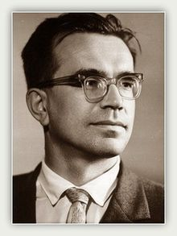
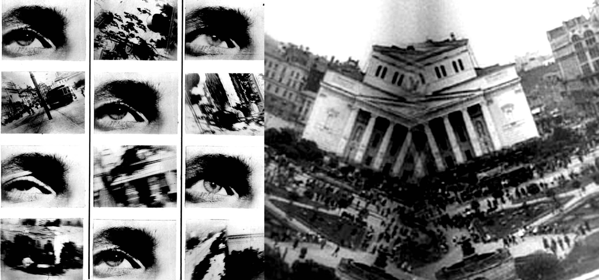
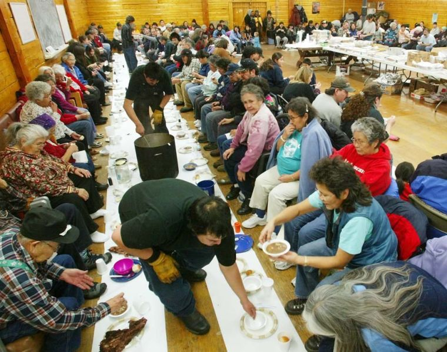
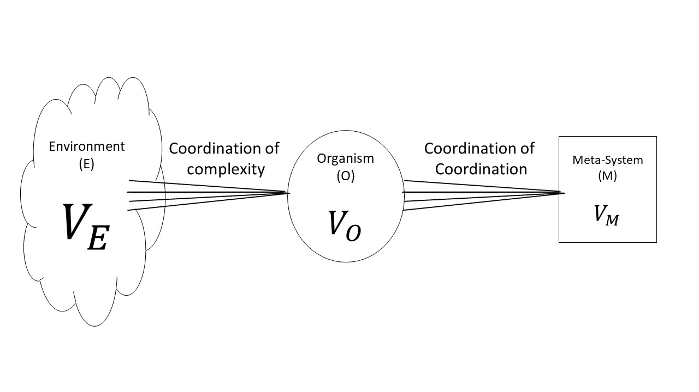
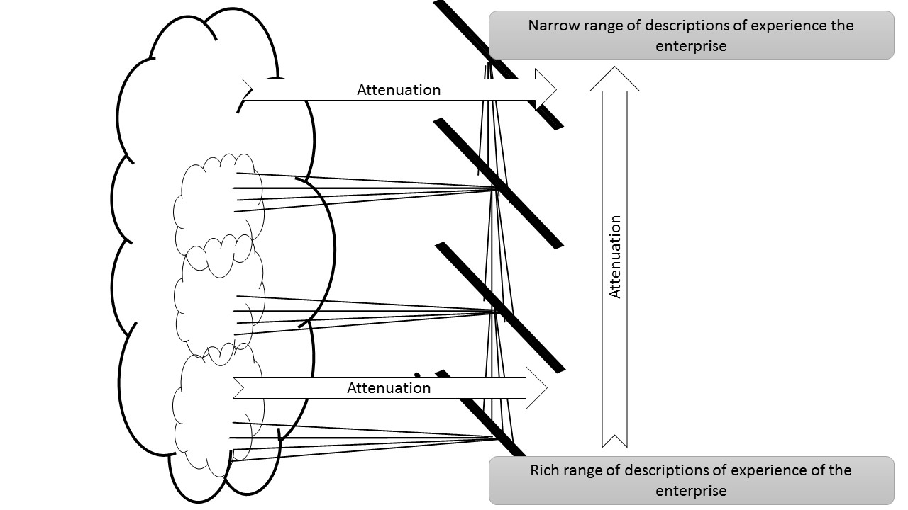
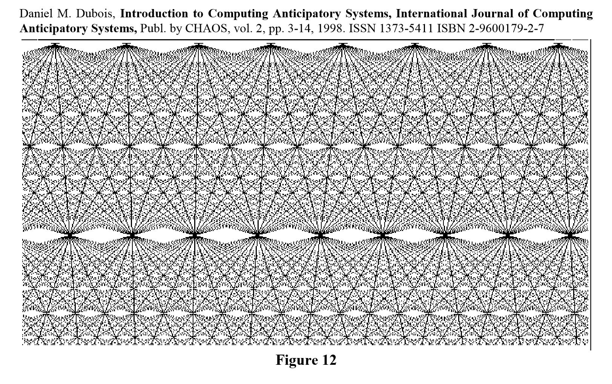
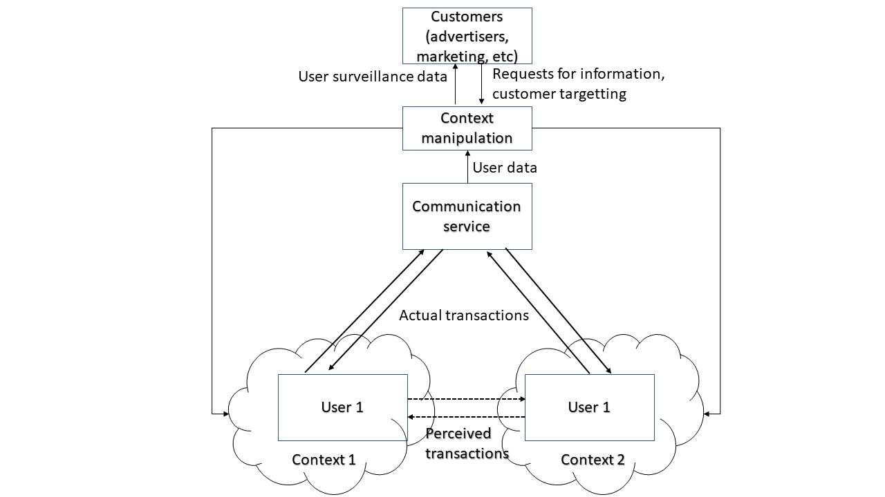

.jpg)
Введение для студентов {#введение-для-студентов .unnumbered}¶
Университет - это нечто большее, чем получение диплома. За три или четыре года, что вы проводите в университете, происходит много вещей, которые основательно повлияют на то, как будет развиваться ваша жизнь. Очень немногие из этих вещей будут касаться знаний об экономике, бизнесе, экологическом менеджменте или того, что бы вы ни изучали. Все это включает в себя разговоры: с друзьями, сокурсниками, преподавателями, партнерами, соседями по комнате, работодателями, людьми, с которыми вы встречаетесь случайно, членами семьи, менеджерами банков, административным персоналом университетов и так далее.
В этой книге рассказывается о ряде тем для обсуждения о сегодняшнем мире: о вашей будущей работе, ваших карьерных надеждах. А также о технологиях, науке, искусстве, творчестве и межличностном взаимодействии. Они были собраны в сотрудничестве между исследователями из Университета Ливерпуль, Гамбургского университет и преподавателями Дальневосточного федерального университета. Некоторые из перспектив происходят из разных дисциплин: туризм, управление, окружающая среда и т. д.
Во всех этих разговорах участвуют люди с разным опытом (бэкграундом), у них разные проблемы, разные навыки, разные политические взгляды, но каким-то образом у них всех есть, что предложить, что каждый может открыть для себя если они действительно знают, как разговаривать друг с другом. Один из многих важные навыки в жизни - это знание того, как взаимодействовать с людьми имеющих разнообразный опыт (бэкграунд), навыки и знания. Это навык, который не может преподаваться в качестве одной темы. Он должен быть представлен как вызов интерфейсу со многими различными способами мышления и многими дисциплинами. Это то, что сделает Глобальный научный диалог.
Глобальный научный диалог отличается от любого курса, который вы будете изучать в университете. На самом деле, мы считаем, что это уникальный курс во всем мире. Начнем с того, что это не курс, который длится 14 недель с выставлением оценок в конце. Это курс, который интенсивно проходит две недели. В эти две недели вы познакомитесь с множеством различных идей, способов мышления, технологий и студентов из разных программ Школ экономики и менеджмента.
Мы хотим, чтобы вы разговаривали друг с другом о вещах, которые вы видите и в которые вовлечены. Ваши преподаватели не являются экспертами в каких-либо идеях и областях, которые вам будут представлены. На самом деле, мы еще не знаем, сколько из тем, которые вам будут представлены изменят мир или исчезают в безвестности. Однако ваши преподаватели будут поощрять вас задавать такие вопросы, как:
Что вы имеете в виду?
Можете ли вы представить пример, где это неверно?
Что значит быть «правым»?
Можете ли вы представить себе
другой способ описания этого? Это вопросы, которые мы должны постоянно задавать друг другу. В неопределенном мире нам нужно понимать неопределенность друг друга. Но есть умение задавать сильные вопросы и решать сущность проблем в организациях, бизнесе и обществе, которые действительно имеют значение. «Глобальный научный диалог» поможет вам развить эти навыки, чтобы задавать сильные вопросы друг другу.
Ключевые принципы курса {#ключевые-принципы-курса .unnumbered}¶
Сегодня во всех сферах деятельности люди сталкиваются со сложностью. На современном рабочем месте много проблем, которые, как представляется, не имеют простых решений. Иногда их называют «сложными проблемами» (Rittel and Webber 1973). Риттел описывает Wicked Problems как «проблемы, которые трудно или невозможно решить из-за неполных, противоречивых и изменяющихся требований, которые часто трудно распознать».
Примеры сложных проблем включают управление рисками в области здравоохранения или управление окружающей средой или стимулирование инноваций в экономике или попытки сподвигать учащихся и сотрудников изучать новые вещи в университете. Ни в одной из этих ситуаций не существует четкого «правильного ответа»: во всех из них существуют определенная степень неопределенности с которой сотрудники должны вести иметь дело.
В каждом из этих примеров сложные проблемы представляют много разных перспектив: некоторые научные, некоторые технологические, некоторые коммуникативные, некоторые культурные, некоторые творческие и т. д. Ни одна отдельная перспектива не дает возможности решить проблему. Лучшие, что могут сделать хорошие команды — это поговорить и выслушать друг друга, чтобы действовать сообща, имея информацию о широком круге перспектив и дисциплинарных знаний.
Технология увеличивает сложные требования к работе, и все более важно, чтобы студенты понимали характер очень трудных «сложных проблем».
Творчество, гибкость, понимание технологий, коммуникация и способность общаться по разным направлениям/ дисциплинам чрезвычайно важны для того, чтобы гарантировать, что сложные проблемы не станут серьезными бедствиями на рабочем месте. Это означает, что студенты должны изучать новые виды навыков: недостаточно знания только одного предмета. Вы должны быть творческими, гибкими, понимать технологии и уметь выстраивать коммуникацию с разными людьми.
Глобальный научный диалог - это курс, который учит подходам к решению «сложных проблем». В Глобальном научном диалоге вы столкнетесь с множеством идей, которые лежат вне вашей специализированной предметной области. К ним относятся:
Современное научное мышление в физике и биологии
Транс-дисциплинарность
Командная работа
Коммуникация
Инновационное использование технологий
Понимание данных
Активное слушание
Креативность
Хотя вы приобрели много дисциплинарных знаний в различных областях управления и экономики, этот курс дополняет ваши дисциплинарные знания, предоставляя способ подключения различных аспектов знания к вашему пониманию и любопытству по отношению к реальному миру.
Для этого нет подхода «Один размер подходит для всех». Каждый из вас должен будет найти свой собственный путь, настроившись на то, что вас интересует.
Эта книга была подготовлена для того, чтобы помочь вам. Хотя она организован в главы, он не предназначен для чтения от корки до корки. Вместо этого откройте ее на случайной странице и изучите, что вы видите. Затем откройте ее на другой странице и изучите, сравнивая ее с тем, что вы видели раньше.
Каждая страница содержит о тему.
У каждой темы есть ряд вопросов, которые вы можете задать себе
У каждой темы есть свод текста, который объясняет, почему тема важна
В каждой теме есть ссылки на литературу и другие ресурсы, которые помогут вам подумать об этой теме.
Когда вы откроете эту книгу, открой свой разум. Ваш мозг самый мощный компьютер в мире. Позвольте ему установить связи, пока вы позволяете своим воображению и любопытство блуждать. Надеемся, вам понравится!
Технологии¶
Почему технологии?¶
КЛЮЧЕВЫЕ ВОПРОСЫ:
Сколько времени вы проводите в Интернете?
Сколько времени вы тратите на общение в социальных сетях или просмотр социальных сетей?
Смогли ли бы вы жить без телефона? или Интернета?
ПОЧЕМУ ЭТО ВАЖНО?
Технологии коренным образом изменила окружающую среду. Вы первое поколение, которое не сможет вспомнить мир без Интернета.
{width=”0.95\columnwidth”}
Технологии трансформирует мир трудоустройства. Многие традиционные рабочие места были автоматизированы, и многие из традиционных профессий, таких как юриспруденция, преподавание, бизнес и менеджмент, были принципиально и до неузнаваемости трансформированы технологиями. Какую бы карьеру вы ни выбрали для себя - будь то преподавание, медицина, торговля акциями, даже будучи художником, - весьма вероятно, что большая часть этого будет связана с необходимостью смотреть на экраны и работать с программным обеспечением.
Технологии постоянно меняются. Они всегда будет продолжать меняться.
ГДЕ Я МОГУ УЗНАТЬ БОЛЬШЕ?
Компьютер¶
КЛЮЧЕВЫЕ ВОПРОСЫ:
Что компьютер делает для людей?
Что сделал компьютер для общества?
Как мы можем жить в гармонии с компьютерами в будущем?
ПОЧЕМУ ЭТО ВАЖНО?
Технология и компьютеры позволяют создавать новые формы контроля над людьми.
Компьютеры создали новый тип системы человек-машина в обществе, где ограничениями можно легко манипулировать. Мы не совсем понимаем, как наша новая системы человек-машина отличается от социальной системы наших родителей.
Компьютеры облегчают манипулирование ограничениями. Например то, как на экране компьютера отображаются изменяющиеся возможности при вводе фразы в поисковую систему, щелкните гиперссылки, которые нам представлены, а затем обсудите, какие новые возможности для действий были запрограммированы на определенные веб-страницы, иллюстрирует, как ограничения может быть изменено.
 {width=”\textwidth”}
{width=”\textwidth”}Человеческий опыт этого процесса напоминает нам о системе человек-машина, в которой мы находимся: очень реальные эмоции возникают в ответ на механические процессы, не отличающиеся от фундаментального эмоционального воздействия физических ограничений, таких как тюремные стены, системы одностороннего движения транспорта, центрального отопления или будильника.
Слово «com-puter» происходит от латинского «com-putare». «Putare» означает размышлять- так что компьютер - это средство размышления. С точки зрения какой науки мы можем исследовать это, и с помощью каких инструментов мы можем теперь организовывать себя?
ГДЕ Я МОГУ УЗНАТЬ БОЛЬШЕ?
Интернет как ‘Lifeworld ‘¶
КЛЮЧЕВЫЕ ВОПРОСЫ:
Как компьютер повлиял на то, что мы считаем «реальным»?
Как компьютер повлиял на то, что мы считаем «истинным» или «ложным»?
Как компьютер повлиял на то, как мы себя чувствуем?
ПОЧЕМУ ЭТО ВАЖНО?
Диаграмма демонстрирует способ, с помощью которого компьютеры создают миры, в которых мы обитаем. Сегодня мы путешествуем по этим мирам, не задумываясь об этом. Этот феномен не существовал во времена, когда компьютеры не существовали.
Концепция «Жизненный мир/Lifeworld» - это способ говорить о вашей повседневной окружающей среде: обо всем, что вы считаете «реальным миром». Этот мир может быть виртуальным и реальным.
У каждого из нас разные взгляды на реаль- ность, и, хотя некоторые вещи, такие как кам- ни и деревья, кажутся универсальными, мы так думаем только потому что мы наблюдаем, как другие ведут себя предсказуемо с камня- ми и деревьями.
 {width=”\textwidth”}
{width=”\textwidth”}Что-то происходит между нами в «реальном мире». Слово «интерсубъективный» описыва- ет то, что происходит между нами. Изучением взаимодействия занимается феноменология. Ученые, которые считаются ключевыми фигурами в феноменологии – Эдмунд Гуссерль и Альфред Шюц. Гуссерль и Шюц ссылались на понятие «жизненный мир» как на контекст, в котором происходит интерсубъективное взаимодействие.
Компьютер преобразовал «жизненный мир» всех. Стали ли наши жизненные миры неустойчивыми? Одна общая среда, в которой наши ожидания могут быть скоординированы, изменилась на множественные «жизненные миры», в рамках которых люди перемещаются.
Даже в ситуациях лицом к лицу, таких как лекции, студенты часто будут находиться в разных «жизненных мирах», когда они отвлекаются на социальные сети или другие онлайн-отвлекающие факторы.
ГДЕ Я МОГУ УЗНАТЬ БОЛЬШЕ?
Социальные медиа¶
КЛЮЧЕВЫЕ ВОПРОСЫ:
В чем разница между разговором на форуме в социальных сетях и беседой с кем-то лицом к лицу?
С кем вы разговариваете, когда вы размещаете посты на форуме в социальных сетях?
Откуда вы знаете, что вы действительно общались с кем-то в социальных сетях?
Откуда вы знаете, что вы действительно общались с кем-то лицом к лицу?
ПОЧЕМУ ЭТО ВАЖНО?
Представьте себе частную беседу между вами и вашим другом: слова, о которых говорит один из вас, слышит только другой человек, и его слова слышите только вы. Конечно, ваш друг мог бы рассказать другим, что вы ему сказали, но это будет уже другой частный разговор.
Социальные медиа расширяют аудиторию любой потенциальной коммуникации, поэтому вы больше не разговариваете с одним человеком, но с потенциальными миллионами.
Когда вы разговариваете лицом к лицу для того, чтобы общаться, вы должны передать смысл того, что вы хотите сказать. Иногда вам нужно тщательно подбирать слова. Вы можете судить, понимает ли другой человек, на основе того, как он реагирует на то, что вы говорите. Если они не реагируют так, как вы ожидали, вы пытаетесь сказать то же самое по-другому?
Успешна ли ваша коммуникация, если человек, с которым вы разговариваете, говорит и ведет себя так, как вы от него ожидаете? Этот процесс был теоретизирован социологом Талкоттом Парсонсом, который назвал его «Двойная случайность» (Parsons and Smelser 2012, Luhmann 1996)
Поскольку социальные сети взаимодействуют с тысячами людей, ваше общение может быть успешным с кем-то из тысяч людей, даже если вы не будете подстраивать то, как вы это говорите.
Это означает, что любое общение в социальных сетях может потенциально быть успешным с кем-то в сетевом наборе возможных отвечающих.
ГДЕ Я МОГУ УЗНАТЬ БОЛЬШЕ?
 {width=”\columnwidth”}
{width=”\columnwidth”}
 {width=”\columnwidth”}
{width=”\columnwidth”}
Социальные сети и коммуникация: Твиты Трампа!¶
КЛЮЧЕВЫЕ ВОПРОСЫ:
Когда Трамп пишет в Твиттере, что происходит в социальных сетях?
Как количество людей в социальных сетях меняет способ общения?
Как мы решаем, какую медиа-платформу мы будем использовать для коммуникации?
ПОЧЕМУ ЭТО ВАЖНО?
На приведенной выше диаграмме показана коммуникационный вызов социальных сетей
Отправитель думает о сообщении для электронной отправки, которое содержит «шум» разных видов (например, разное понимание, разные культуры и т. д.),
Существует много (миллионов) возможных получателей сообщения.
Среди одного или двух таких получателей кто-то поймет сообщение и передаст его еще более широкой аудитории.
 {width=”\textwidth”}
{width=”\textwidth”}
Когнитивные искажения и троллинг¶
КЛЮЧЕВЫЕ ВОПРОСЫ:
Почему в социальных сетях наблюдался взрыв злоупотребления: женоненавистничество, расизм, троллинг, преследование и фальшивые новости?
Что такого в онлайн-общении, из за чего люди могут свободно говорить вещи, которые они не бы не сказали лицом к лицу?
ПОЧЕМУ ЭТО ВАЖНО?
«Когнитивное искажение» - это термин означающий то как взаимодействия формируются под воздействием коммуникации других людей.
Социальные медиа предоставляют способы, с помощью которых очень большой аудиторией можно манипулировать с помощью сообщений, с которыми многие могут не согласиться, но которые распространяются на просторах Интернета.
«Троллинг» - это форма злоупотребления, которая основана на когнитивном искажении. Оскорбительные или бездумные сообщения создаются из-за того, что существуют сообщества, которое будет одобрять их, но также такие сообщества и одобряют негативные последствия этих сообщений.
Выбор аудитории по высказыванию или множественному описанию может усугубить политическую неопределенность, на которую институциональные структуры должны реагировать.
Иногда реакция таких институтов, как правительства, усиливает неопределенность.
ГДЕ Я МОГУ УЗНАТЬ БОЛЬШЕ?
https://www.youtube.com/watch?v=QRut1CWws0U {width=”\columnwidth”}
 {width=”\columnwidth”}
{width=”\columnwidth”}
Повышают ли технологии неопределенность?¶
КЛЮЧЕВЫЕ ВОПРОСЫ:
Когда кто-то изобретает новый инструмент, как часто это предоставляет новый способ делать то, что мы делали раньше?
Как часто он предоставляет способ делать то, чего раньше не было?
Почему одна технология заменяет другую? Почему некоторые технологии не могут найти пользователей?
ПОЧЕМУ ЭТО ВАЖНО?
Любая новая технология создает новый вариант для того чтобы делать что-то. Давным-давно, единственным способом передвижения была пешая прогулка или езда на лошадях. Новые варианты были созданы железными дорогами, автомобилями, самолетами и так далее.
То же самое происходит и с коммуникацией: когда-то мы должны были быть рядом с человеком, с которым мы разговариваем. Новые варианты были созданы благодаря изобретению письма, печати, телефона и Интернета?
 {width=”\textwidth”}
{width=”\textwidth”}Сегодня у нас есть ошеломительный выбор: написать ли бумажное письмо, отправить электронную почту, твит, смс или сделать телефонный звонок?
Каждый новый вариант для того чтобы что-то делать создает еще большую неопределенность в решении: технологии создают неопределенность.
Технологии также может ограничить наши возможности действовать определенным образом: закрытые ворота или ограждения могут ограничивать, то как люди передвигаются в физическом мире.
Компьютерные системы сегодня предоставляют пользователям «формы» для заполнения таких данных, как ваше имя, адрес, номер телефона, пароль и т. д.
Они ограничивают: технологии ограничивают варианты.
Технологии, такие как компьютеры, используют алгоритмы для создания новых способов взглянуть на мир, к которому у нас не было бы доступа без них.
Технологии расширяют описания мира.
Компьютер выполняет все эти три вещи одновременно.
Технологии и обратная связь¶
КЛЮЧЕВЫЕ ВОПРОСЫ
Чем вы похожи на робота?
Чем вы похожи на растение?
Как вы адаптируетесь к окружающей вас среде?
ПОЧЕМУ ЭТО ВАЖНО?
Современный компьютер был разработан в 1940-х годах как результат технологических инноваций, возникших после Второй мировой войны.
Одним из принципов современного компьютера была концепция обратной связи: где выходы системы подключены к ее входам. Было отмечено, что системы с обратной связью демонстрируют «реалистичное» поведение, и многие ученые были очарованы этим реалистичным поведением прямо в начале эволюции компьютера.
Современные технологии Искусственного интеллекта (ИИ) и Больших данных основаны на обратной связи. Что еще более важно, большинство методов и технологий ИИ не новы, но были изобретены одновременно с цифровым компьютером - в конце 1940-х годов некоторыми из ведущих деятелей кибернетики: Уоррен МакКаллох, Норберт Винер, Джон фон Нейман.
Что нового сегодня, так это то, что мы
подключили каждого человека на планете в информационную сеть, так что принципы интеллекта и обратной связи, представленные в 1940-х годах, теперь действуют и на людей в этой сети.
Российская кибернетика и компьютерные вычисления начались после смерти Сталина, который запретил ее, потому что считал антикоммунистической. Такие люди, как Виктор Глушков, были пионерами в области вычислительной техники в России.
Должен ли интернет быть создан на серверах, в которых хранятся файлы, к которым обращаются пользователи при вводе веб-адреса?
Что происходит, когда один из этих серверов (например, google) перестает работать?
Существует ли альтернативный способ организации файлов, где они существуют повсюду, а не в одном месте? Каковы последствия организации вещей по-другому?
ГДЕ Я МОГУ УЗНАТЬ БОЛЬШЕ?
https://www.youtube.com/watch?v=q_mtmmrGhEw
{width=”\columnwidth”}
Децентрализация¶
КЛЮЧЕВЫЕ ВОПРОСЫ
Должен ли интернет быть создан на серверах, в которых хранятся файлы, к которым обращаются пользователи при вводе веб-адреса?
Что происходит, когда один из этих серверов (например, google) перестает работать?
Существует ли альтернативный способ организации файлов, где они существуют повсюду, а не в одном месте? Каковы последствия организации вещей по-другому?
ПОЧЕМУ ЭТО ВАЖНО?
Когда был разработан Интернет, идея заключалась в том, что каждая машина должна быть подключена к любой другой машине без центральной точки управления.
Протокол, через который работает веб-сайт, Hyper-Text Transport Protocol (http), полагается на наличие серверов, которые доставляют документы.
По мере развития сети она воспроизвела централизованную структуру общества, где корпорации и правительства имеют крупнейшие веб-сайты. Поэтому вместо свободной и открытой сети, где все равны, у нас есть сеть, в которой доминируют несколько корпораций.
Веб-децентрализация фокусируется на том, как уменьшить нагрузку на отдельные серверы, распространяя файлы на множестве серверов. Он также рассматривает возможность распространения доступа в Интернет в некоторых частях мира, где инфраструктура здания не является жизнеспособной, как сельские районы. Он также стремится решить проблемы, связанные с волнением граждан о наблюдении.
Blockchain - одна из форм децентрализации, но также появляются такие новые технологии, как файловая система Inter-planetary (http://ipfs.io) и несколько подобных децентрализованных протоколов, таких как DAT (https://datproject.org/).
Также развивается аппаратное обеспечение для поддержки децентрализации. Устройство Gotenna (см. https://www.gotenna.com/pages/mesh) представляет собой небольшой радио-повторитель, который передает сигнал на 4 мили и может легко сформировать сотовую сеть с другими приемниками Gotenna по соседству.
ГДЕ Я МОГУ УЗНАТЬ БОЛЬШЕ?
https://www.youtube.com/watch?v=X2u29w4ejPQ
 {width=”.8\columnwidth”}
{width=”.8\columnwidth”}
Blockchain и BitCoin¶
Возможно ли существование валюты без центрального банка?
Если какое-либо учреждение, такое как банк, может быть заменено технологиями, то как насчет других институтов, таких как университеты?
Если учреждения обеспечивают доверие к валюте, как технологии устанавливают равную степень доверия?
ПОЧЕМУ ЭТО ВАЖНО?
Одной из функций таких учреждений, как банки, университеты или больницы, является обеспечение доверия к их услугам. Люди используют учреждения, потому что они доверяют честности того, что делает учреждение.
Например, банкнота обычно содержит «обещание» банка выплатить сумму, которая написана на бумаге. BitCoin предоставляет способ, которым доверие может быть установлено просто с помощью алгоритма, а не требовать учреждения.
 {width=”\textwidth”}
{width=”\textwidth”}Не менее важно то, что алгоритм BitCoin представляет собой распределенную технологию, называемую Blockchain, которая не хранит данные о транзакции на каком-либо одном сервере.
Алгоритм Blockchain представляет собой «цепочку цифровых подписей», которые выступают в качестве открытой и прозрачной книги операций в валюте биткойнов (Nakamoto n.d.)
Blockchain имеет два основных качества, которые гарантируют, что система заслуживает доверия. Во-первых, весь Blockchain - список всех транзакций - распространяется и дублируется по всему Интернету. Во-вторых, достоверность Blockchain гарантируется процессом под названием «майнинг». Это процесс с интенсивным использованием данных, который направлен на выявление любых аномалий в системе. Майнинг имеет двойную цель: в то время как он обеспечивает точность системы, он также вознаграждает тех, кто находит несоответствия в создании новых биткойнов, связывая механизм проверки с контролем денежной массы (функция, обычно выполняемая центральным банк) (Vigna и 2016)
Искусственный интеллект¶
КЛЮЧЕВЫЕ ВОПРОСЫ
Как работает Google переводчик?
Что мог бы сделать Искусственный интеллект в будущем?
Что он не сможет сделать?
ПОЧЕМУ ЭТО ВАЖНО?
Простые машины с обратной связью могут создавать явления, подобные живым. В течение долгого времени люди спрашивали: «Можем ли мы создать искусственный мозг?»
В 1950-х и 60-х годах кибернетика была новой дисциплиной, в рамках которой эти события могли рассматриваться вместе.
То, что мы теперь называем «машинным обучением», также относится к этому периоду. Машинное обучение уходит корнями в работу одного из пионеров ранней кибернетики Уоррена Маккаллоха. Маккаллох видел, что нейронные структуры мозга были множественными взаимосвязями. Описывая логику этой структуры, Маккаллох придумал термин «гетерархия».
Нейронные сети имеют много взаимосвязанных узлов, и их можно обучить выявлению различных характеристик «вещей, подлежащих распознаванию». Например, если мы хотим, чтобы нейронная сеть распознавала изображение кролика, сеть подвергается воздействию многих изображений кроликов (учебного набора). Имея достаточно фотографий, он изучает характеристики «кроликов», чтобы можно было идентифицировать новые изображения кроликов.
Google Translate работает аналогичным образом: он содержит миллионы примеров текста на разных языках, которые он передает в свою нейронную сеть. Это учит тому, как конвертировать один язык в другой. Он также учится на предпочтения пользователей, когда они его используют.
Машинное обучение зависит от наличия тысяч предметов для обучения. Если тысячи предметов недоступны, машинное обучение вряд ли будет очень хорошим.
ГДЕ НАЙТИ БОЛЬШЕ ИНФОРМАЦИИ?
У Google есть открытый ресурс машинного обучения под названием TensorFlow, со многими примерами машинного обучения: https://www.tensorflow.org/
В рамках проекта Magenta есть несколько впечатляющих демонстраций машинного обучения в искусстве: https://magenta.tensorflow.org/demos
Наблюдение и Большие данные¶
КЛЮЧЕВЫЕ ВОПРОСЫ
Как много о вас знают такие компании, как Facebook, VK, Whatsapp или ваш интернет-провайдер?
Это проблема, что технологические компании так много знают о вас?
Это проблема, что правительства могут так много знать о вас?
ПОЧЕМУ ЭТО ВАЖНО?
Все, что мы делаем в Интернете, фиксируется в данных, которые отправляются обратно поставщикам онлайн-сервисов, которые мы используем.
Провайдеры онлайн-услуг адаптируют услугу, которую они предоставляют нам, исходя из того, что они знают о нас: поэтому, если вы совершаете покупки на Amazon, вы будете получать рекламу на данную вещь на других веб-страницах.
 {width=”\textwidth”}
{width=”\textwidth”}Эта запись личных данных беспрецедентна в истории человечества: это не «взаимосвязь» людей, для которых интернет это что-то новое (мы всегда были взаимосвязаны как люди); это способность к стратегической организации, напоминание и манипулирование данными о людях, чтобы затем изменить поведение людей.
Сбор персональных данных связан с централизацией Интернета. Если интернет был бы децентрализован, личные данные могли бы храниться под контролем того, кто его создает.
Затем люди могли продавать свои собственные данные корпорациям, если они того пожелают.
Скандал Cambridge Analytica недавно показал, как персональные данные используются крупными корпорациями для коммерческих и политических преимуществ.
ГДЕ НАЙТИ БОЛЬШЕ ИНФОРМАЦИИ?
Чем бы вы предпочли поделиться - зубной щеткой или паролем?¶
КЛЮЧЕВЫЕ ВОПРОСЫ
Чем бы вы предпочли поделиться: вашим паролем на Facebook / VK или зубной щеткой?
Каким образом компьютеры препятствуют вам при выполнении какого-либо дела?
ПОЧЕМУ ЭТО ВАЖНО?
Совместное использование ваших паролей означает контроль того, как ваша информация определяет, кем вы можете быть и что вы можете делать.
Технологии заставляют нас вести себя определенным образом, требуя использования электронных форм, паролей, пользовательских разрешений, брандмауэров и т. д.
Онлайн-форма является хорошим примером того, как заставить людей делать определенные вещи. Самый ранний пример формы был разработан во время первой мировой войны. Форма A2042 называлась «полевой почтовой карточкой», на которой солдаты могли отправлять короткие сообщения домой, вычеркивая варианты, которые могли быть применимы к их ситуации. Пол Фассел утверждает, что это был:
«прародитель всех современных форм, на которых вы заполняете данные или вычеркиваете ненужное, или проверяете данные, от полицейских дорожных сообщений до «вопросников »и бланков подоходного налога» (Fussell 2013)
Платформы социальных сетей предоставляют контент пользователям таким образом, чтобы можно было предвидеть поведение пользователей.
Почтовая карточка полевой службы является упрощением, которое усиливает контроль со стороны центрального органа или иерархии (в данном случае - британской армии). Ограниченная структура формы не позволяла солдатам говорить слишком много.
Иерархии поддерживают себя путем упрощения потока информации между собой и окружающей средой.
Сегодняшние компьютерные формы делают больше, чем упрощают общение людей. Компьютерные инструменты также усиливают модели поведения, полученные путем захвата многих людей, занимающихся формой. Современные компьютерные технологии могут динамически адаптировать ограничения, в которых пользователи взаимодействуют с системой.
Платформы для социальных сетей представляют контент для пользователей, которые могут предвидеть поведение пользователей.
{width=”\columnwidth”}
Несколько дополнительных вопросов о вашем будущем и технологиях¶
Собираетесь ли вы устраиваться работу без понимания, куда идут технологии?
Почему важно понимать технологии?
Возможно ли хорошее общество в мире технологий?
Что должны понимать политики в отношении технологий?
Искусство и творчество¶
Художники и ученые¶
КЛЮЧЕВЫЕ ВОПРОСЫ
Можно ли сформулировать научно обоснованное описание деятельности творческого человека?
Что общего у художников и ученых?
Насколько они разные?
ПОЧЕМУ ЭТО ВАЖНО?
Творческое мышление кажется принципиально отличным от научного; тип людей, которые работают в науках и искусстве, кажется принципиально иным. Тем не менее, великие ученые, такие как Тесла, и великие художники, такие как Леонардо, похоже, имеют много общего.
Ученые создают абстракции, которые описывают мир уравнениями и моделями. Художники создают абстракции, которые описывают мир в красках, свете, звуке, движении.
Обе стороны дают множество описаний мира и создают новые возможности для взгляда на мир. Художники важны, потому что они показывают нам, как смотреть на мир по-другому.
ГДЕ НАЙТИ БОЛЬШЕ ИНФОРМАЦИИ?
https://www.youtube.com/watch?v=jt218332bRQ
 {width=”0.9\columnwidth”}
{width=”0.9\columnwidth”}
Вы художник?¶
КЛЮЧЕВЫЕ ВОПРОСЫ
Сколько раз вы делаете фотографии на своем телефоне?
Сколько раз вы публикуете фотографии в социальных сетях (VK, Facebook и т. Д.)?
Чем вы заняты, когда публикуете фотографии?
Сколько описаний сторон вашей жизни в социальных сетях?
ПОЧЕМУ ЭТО ВАЖНО?
Если творческое мышление заключается в создании множественных описаний действительности, тогда мы более творческие, чем мы могли бы подумать!
Каждый раз, когда мы фотографируем, мы создаем описание. При публикации в социальных сетях мы добавляем это описание к нашим другим описаниям, которые существуют.
 {width=”\textwidth”}
{width=”\textwidth”}Однако есть разница между тем, что мы делаем и что может сделать художник: художники собирают множество описаний вещей, чтобы они стали последовательными.
Художники находят общую картину между различными описаниями. Художественное мастерство включает в себя манипулирование несколькими описаниями, чтобы выявить их общую картину.
Поиск общей картины - это способ говорить о более глубоком смысле реальности.
ГДЕ НАЙТИ БОЛЬШЕ ИНФОРМАЦИИ?
Множественные описания в видео¶
КЛЮЧЕВЫЕ ВОПРОСЫ
Если вы хотите научиться исправлять утечку или ошибку в своем автомобиле, вы ищете какой-то текст в Википедии или ищете видео на YouTube?
Когда вы смотрите видео с YouTube, что с вами происходит с течением времени?
В ключевой момент кульминации в видео, каковы элементы, которые вызывают это удивление?
ПОЧЕМУ ЭТО ВАЖНО?
Видео представляет несколько описаний мира во времени.
Многочисленные описания, представленные видео, имеют много измерений и меняются со временем.
Эдгар Морен в своей книге «Кино и воображаемый человек (Cinema and the imaginary man)» (Morin 2005) подробно раскрывает различные описания, которые представляет кинотеатр. К ним относятся:
способ изменения света и тени
способ изменения размера объектов
способ изменения звука и музыки в фильме
{width=”\textwidth”}
способ изменения речи
способ перемещения камеры
сокращение одного выстрела до следующего
… и так далее …
Различные измерения Морина связаны между собой. Рассматривая, как YouTube связывает несколько описаний с течением времени, мы можем говорить о структурных отношениях между его различными элементами.
Многие из этих проблем движущегося изображения рассматривались в российском кино, особенно в работах Вертова и Эйзенштейна.
ГДЕ НАЙТИ БОЛЬШЕ ИНФОРМАЦИИ?
Объекты, генерируемые компьютерами¶
КЛЮЧЕВЫЕ ВОПРОСЫ
Может ли компьютер быть художником?
В современном искусстве сейчас часто использует компьютеры – что компьютеры привносят в художественное выражение?
В чем разница между компьютерным объектом и природным объектом?
ПОЧЕМУ ЭТО ВАЖНО?
Компьютер генерирует свет на экране для создания виртуальных «объектов». Этими виртуальными объектами можно легко манипулировать, а алгоритмы могут генерировать бесконечные вариации объекта.
Люди показывают компьютерные объекты и в процессе обнаруживают что-то о себе, относящееся к ним самим. Поскольку существует много разных компьютерных объектов, существует множество возможных способов, которыми люди могут что-то раскрывать о себе.
Благодаря 3D-печати, компьютеры могут создавать увеличивающиеся массивы физических объектов, включая бумажные документы, трехмерные печатные модели и даже здания.
 {width=”\textwidth”}
{width=”\textwidth”}Практическое использование компьютерных объектов включает использование адаптивных алгоритмов для максимизации производительности транспортного средства (например, «генетические алгоритмы») или использование общих 3D-архитектурных планов при проектировании здания (технология, известная как Building Information Modeling)
Виртуальная реальность - еще один пример компьютерных объектов, которые предоставляют множество описаний мира.
Визуализации (или «визуальная аналитика») данных могут также предоставлять множество различных описаний действительности, выделяя определенные данные, о которых люди могут говорить.
ГДЕ НАЙТИ БОЛЬШЕ ИНФОРМАЦИИ?
Коммуникация с использованием Эмодзи¶
КЛЮЧЕВЫЕ ВОПРОСЫ
Почему люди посылают смайлики или стикеры WeChat друг другу в сообщениях?
В чем разница между использованием слова для чего-то и стикером?
Если бы вы ответили на этот вопрос стикером, что бы это было?
ПОЧЕМУ ЭТО ВАЖНО?
С появлением текстовых сообщений связь все больше дополнялась изображениями и символами.
Каждый стикер имеет особые структурные свойства, которые представлены за один момент. Многие стикеры - это анимации, и представляют информацию со временем. Структура момента - это то, что называется синхронным, а разворачивающееся со временем называется диахроническим
 {width=”\textwidth”}
{width=”\textwidth”}Разговоры работают одинаково: они включают диахронические и синхронные аспекты, каждый из которых дает много описаний, которые координируются в течение всего процесса.
Сочетание стикеров и слов создает сложные комбинации разных элементов, все из которых говорят по-разному.
Когда вы отправляете стикеры друг другу, вы являетесь художником?
Творчество и счастье¶
КЛЮЧЕВЫЕ ВОПРОСЫ
Делает ли вас творчество счастливым? Если да, почему?
Связаны ли психическое заболевание и творчество?
Когда вы выражаете свои чувства, какие изменения происходят в вашей среде?
Когда вы выражаете свои чувства, какие изменения происходят в вас?
ПОЧЕМУ ЭТО ВАЖНО?
Творческий процесс является одним из самых высоких достижений человеческого интеллекта. Внутри иерархий обучения, таких как таксономия Блума (Bloom 1956), мы находим «творчество» на вершине целого ряда интеллектуальных достижений из воспоминаний памяти в нижней части синтеза и анализа в середине.
В психоаналитических подходах к творческому процессу было высказано предположение, что творчество - это состояние бытия, которое соединяет Эго (Я) с бессознательным в непрерывном процессе (Read 1958; Ehrenzweig 1968; Milner 2010).
Психическое заболевание характеризуется как «творчество, в котором что-то пошло не так» (Ehrenzweig 1968).
Это можно сравнить с терапевтическим процессом Фрейда, который был диалектически ориентированным («разговорная терапия»)
Лечение психологических травм через этот разговорный процесс заключается в формулировании психодинамических ограничений и введении их в беседу терапевта и пациента.
 {width=”\columnwidth”} Лабиринт
(последовательная структура) творческого поиска. Творческий мыслитель
должен продвигаться по широкому фронту, открывая множество вариантов. Он
должен получить всеобъемлющий взгляд на всю структуру пути вперед, не
имея возможности сосредоточиться на какой-либо одной возможности.
{width=”\columnwidth”} Лабиринт
(последовательная структура) творческого поиска. Творческий мыслитель
должен продвигаться по широкому фронту, открывая множество вариантов. Он
должен получить всеобъемлющий взгляд на всю структуру пути вперед, не
имея возможности сосредоточиться на какой-либо одной возможности.
Психический процесс, индивидуализация и успешные люди¶
КЛЮЧЕВЫЕ ВОПРОСЫ
Что это значит, знать, кто вы есть?
Как успешные люди во всех областях развили такое сильное чувство самоидентификации, которое дает им уверенность действовать в мире?
Каков баланс между умом и действиями среди успешных людей?
ПОЧЕМУ ЭТО ВАЖНО?
«Индивидуализация» - это термин Юнга для процесса, при котором идентичность возникает из недифференцированного бессознательного.
Существенная концепция динамического отношения между компонентами сознания аналогична связи Фрейда между Эго, Бессознательным и Суперэго.
То, что происходит между психотерапевтом и пациентом в психоанализе, - это процесс извлечения вещей из подсознания в сознание, путем превращения подсознательных явлений в общение с терапевтом.
 {width=”\textwidth”}
{width=”\textwidth”}Восстановление равновесия важно для индивидуализации: это то, что происходит, когда неопределенность психики уравновешивается управлением неопределенностью социальных отношений до того момента, когда индивид может видеть себя «целым» и отличным от других людей и других вещей.
В юнгианском психоанализе индивидуация проходит через признание фундаментальных архетипов, которые Юнг называет коллективным бессознательным.
Неопределенность¶
КЛЮЧЕВЫЕ ВОПРОСЫ
Когда вы в чем-то не уверены, что вы делаете?
В какой степени неопределенность проявляется в индивидуальном сознании и в какой степени это происходит в социальной среде?
Почему разговор важен для управления неопределенностью?
ПОЧЕМУ ЭТО ВАЖНО?
Неопределенность присутствует в индивидуальном сознании - никто не может быть уверен полностью в чем-либо
Неопределенность также присутствует в социальной среде: поскольку никто не уверен в чем-либо, есть много аргументов в отношении смысла вещей, политических вопросов, научных знаний и т. Д.
Методы системного моделирования могут помочь в изучении взаимосвязи между управлением неопределенностью в психике и управлением неопределенностью в окружающей среде.
Приведение процесса управления неопределенностью таким образом помогает согласованно связать как психодинамический механизм Фрейда с реляционным механизмом Боулби. Предполагается, что ущерб отношениям неизбежно будет иметь психодинамические эффекты.
Борьба за управление неопределенностью в отношении близости к воспитателю должна быть связана с некоторой более глубокой неопределенностью в отношении недифференцированного опыта ребенка (и матери) и более конкретных «категорий» опыта, которые возникают, когда «близость» становится таковой, над которой ребенок пытается осуществлять контроль. Таким образом, недифференцированное подсознание ребенка и матери и механизм управления неопределенностью подсознания образуют согласованную часть процесса привязанности.
ЩЧто происходит в момент, когда мы обсуждаем вопросы, в которых не уверены?¶
КЛЮЧЕВЫЕ ВОПРОСЫ
Как щедрость поможет справиться с неопределенностью?
Являются ли художники щедрыми в том, как они выражают себя?
Быть открытым в выражении своих эмоций одно и то же, что и быть щедрым?
ПОЧЕМУ ЭТО ВАЖНО?
Нет человека, который бы был полностью в том или ином вопросе. Но иногда мы притворяемся, что уверены!
Представьте вы дарите подарок: подарок - очень сложный объект, который может быть интерпретирован по-разному. Это значение часто неоднозначно. Именно эта двусмысленность делает его мощным.
При обмене чего-то на деньги смысл и ценность обмена должны быть ясны всем, кто в нем участвует. Однако подарок - это объект, который функционирует, раскрывая что-то из внутренних миров дающего и получателя. {width=”80%”}
Подарок - это приглашение раскрыть индивидуальную неопределенность друг другу, вынося его в социальную сферу, где разговор может порождать новую динамику, которая поддерживает социальную сплоченность.
Антрополог Жорж Батай (Batayle 1991), глубоко размышлял о подарках. Под влиянием концепции Потлача Мосса (Mauss and EvansPritchard 2011) Батай утверждал, что подарки в сообществах - это процессы признания фундаментальных неопределенностей существования.
Батай утверждает, что расточительство было тогда главным актом, и в первобытном обществе он принял форму человеческих жертвоприношений и щедрых праздников.
В современном обществе он может принимать форму буйного поведения - от искусства до футбольных матчей.
Теория Большого Взрыва?¶
Физика¶
КЛЮЧЕВЫЕ ВОПРОСЫ:
Если мы имеем представление о возникновении мира, отличное от других, можем ли мы сказать, что наша социальная реальность также изменится?
В школе все изучают такие понятия как масса, пространство, время и электрический заряд. Но что это за вещи? Как мы понимаем, что они реальные?
Почему нет последовательной неоспоримой теории всего, что объединяет теорию относительности с квантовой механикой?
ПОЧЕМУ ЭТО ВАЖНО?
Было время, когда наука верила, что мир природы стал доступен для расчетов и прогнозов. Научное наблюдение произвело объективность (Wiener, 1988)
 {width=”80%”}
{width=”80%”}Научные факты были бесспорными, и научная практика физики стала основой для исследования общества, экономики, искусства и образования.
Вопросы Эйнштейна касались восприятия ученых: восприятие было относительно к свету, пространству и времени
В квантовой механике наблюдение было относительно в зависимости от контекста, в котором оно происходит, но и связано с самой структурой природного мира: наблюдение изменяет мир.
Биология¶
КЛЮЧЕВЫЕ ВОПРОСЫ:
Что появилось первым: клетка или ДНК?
Как молекула (ДНК) относится к другой молекуле?
Какова связь между клетками и атомами?
ПОЧЕМУ ЭТО ВАЖНО?
Жизнь - клеточная. Но что такое клетка? В школе мы узнаем, что биология - это сильно отличающийся от физики предмет. Биология имеет дело с живыми процессами, обратной связью, гомеостазом и т. д. Физика касается вечных законов механики. Мы принимаем, что биологические системы состоят из атомов и молекул, но связь между процессами механизмов атомов и молекул и живыми процессами растущего эмбриона покрыты тайной.
Как бы выглядела наука, если бы мы рассматривали биологию и физику как единое? Влияние квантовой механики на биологические системы в настоящее время вызывает большой интерес, так как биологические явления, такие как чувствительность, успешно объясняются квантовыми явлениями.
В биологии и физике существует большое количество основных вещей, которые мы не знаем. Что происходит на квантовом уровне? Что такое масса, время или пространство? Все говорят об «энергии», но что это? Почему все в природе кажется сцепленным вместе - планеты, растения, звезды, человек, сознание?
Решая убить планету¶
КЛЮЧЕВЫЕ ВОПРОСЫ:
Являются ли экологические проблемы результатом провала человечества в принятии правильных решений?
Как люди могут принимать правильные решения?
Почему люди так недальновидны в развитии новых технологий?
ПОЧЕМУ ЭТО ВАЖНО?
В своей новой книге «Novocene” Джеймс Лавлок – создатель теории Геи, согласно которой ученый предвидел глобальные угрозы – предположил, что именно Искусственный интеллект может спасти планету, потому что у Искусственного интеллекта нет тех проблем в принятии эффективных решений, которые есть у человека, для решения глобальных проблем человечества.
В основе наших проблем по вопросам климата лежит решение. Когда люди принимают решения, будь то на индивидуальном уровне или на уровне корпораций, руководящих органов, министерских учреждений, политических конференций, международных соглашений или групп давления, умы собираются вместе для координации коллективного курса действий, подходящего для группы.
Плохие решения возникают между организациями, включая университеты, где каждая организация стремится поддерживать свою идентичность и миссию. Студенты, которые получают образования в университетах в качестве юристов, бизнесменов, инженеров и т. д., иногда могут продолжать наносить ущерб обществу.
Решения принимаются в условиях ограничений. Существуют непосредственные ограничения, которые включают в себя доступную информацию о ситуации, навыки и возможности людей, психологию, технологические ресурсы и каналы связи для координации действий.
Более тонкие ограничения включают отношения власти в группе принятия решений и более широкие политические предпосылки принятия решений.
Решения принимаются в меж-субъективном контексте, даже если они являются решениями отдельных лиц для их собственных нужд. Например, учащиеся, столкнувшиеся с выбором предмета или образовательной организации, должны иметь дело с несколькими ограничениями, среди которых информация о суждениях других относительно их пригодности для конкретного курса, информация о перспективах карьерного роста, информация об альтернативах, информация о расходах, а также такие как самооценка стремлений, неопределенности, приверженность и мотивация.
Инновации и научный прогресс¶
КЛЮЧЕВЫЕ ВОПРОСЫ:
Увеличивают ли или уменьшают инновации сложность и неопределенность в обществе?
Какова взаимосвязь между инновациями людей и экосистемой?
Каким образом одна инновация приводит к другой?
ПОЧЕМУ ЭТО ВАЖНО?
С одной стороны постепенно улучшаются технологии: сегодняшние автомобили намного лучше, чем автомобили 1950-х годов, самолеты падают редко, а медицинские процедуры, которые когда-то были бы очень опасны, теперь являются рутинными и безопасными. Технологии развиваются: они становятся более эффективными, безопасными и дешевыми.
Однако развитие справедливости, свободы, социального обеспечения, образования и предотвращения конфликтов не было столь впечатляющим.
Технологический прирост повышенной эффективности создает систематические проблемы где-нибудь в других местах: автомобили превращают землю в асфальт, загрязняют воздух дымом и шумом, вызывают пробки, приводят к путешествию на все большие расстояния и создают патологическую одержимость скоростью.
Предыдущее поколение быстрых автомобилей создает новую неопределенность, которая приводит к следующему поколению быстрых автомобилей. Поиск новых медицинских процедур и лекарств является реакцией на неопределенность, вызванную предыдущим поколением препаратов и процедур. Создание новых способов измерения эффективности социальных систем - реакция на провал существующих способов измерения социальных систем.
 {width=”2\columnwidth”}
{width=”2\columnwidth”}
Компьютеры и наука¶
КЛЮЧЕВЫЕ ВОПРОСЫ:
Могут ли ученые быть заменены компьютерами?
В каких областях научного исследования не задействованы компьютеры?
Поскольку компьютеры влияют на информацию, что такое информация и как она относится к науке?
ПОЧЕМУ ЭТО ВАЖНО?
После достижений физики в XX веке компьютеры стали важными инструментами для расчета вероятностей, а не для определенных объективных наблюдений.
К 1940-м годам компьютеры использовались для расчета решений статистических уравне- ний in physics: теоретическое раз- витие можно было ускорить с помощью меха- нических средств для расчета.
С тех лет и по сей день компьютер преобразовали науку до точки доминирования над ней. Сложность статистического анализа была использована при обработке огромных объемов данных (таких как человеческий геном), создающих новые шаблоны и описания, которые раскрывают новые идеи.
Компьютерные модели, похоже, имитируют природу, демонстрирующую прогностическую силу в своем поведении, без какой-либо основной гипотезы, а результаты поисковых процедур в обширной базе данных ресурсов в Интернете могут легко создать впечатление, что мир - это Интернет.
Это привело к инструментализации научного исследования. Достижения в области машинного обучения, готового программного обеспечения для обработке данных социальных наук, инструментов моделирования от инженерных наук до биологии создают научную среду, в которой невозможность контролировать доступное программное обеспечение является бОльшим препятствием для профессионального успеха, чем невозможность критически мыслить о том что такое быть опытным.
 {width=”\columnwidth”}
{width=”\columnwidth”}
ДНК и информация¶
КЛЮЧЕВЫЕ ВОПРОСЫ:
Если ДНК содержит информацию, эта информация такая же, как информация на компьютере?
Ферменты и белки также содержат информацию? Как эта информация относится к информации в ДНК?
Как клетки в конце пальца ребенка знают, что они находятся в конце пальца? Говорит ли им об этом ДНК?
ПОЧЕМУ ЭТО ВАЖНО?
Никто не знает, что такое информация: нет общепринятого определения, которое объединяет информацию в ДНК с информацией в компьютере или информацией в физике.
Однако секвенирование информации в ДНК и генетике в настоящее время является огромной отраслью. В большинстве этих работ доминируют крупномасштабные компьютерные исследования. Есть опасения, что этот акцент на исследования, основанный на использовании компьютеров, вытеснит пространство для размышления или переосмысления того, как работает жизнь. В недавней статье Амос утверждает, что управляемая компьютерами «большая наука» - это то, о чем мы все должны вольноваться, потому что: «Секвенирование генома предлагает небольшую научную подготовку, потому что большая часть работы выполняется машинами и техническими специалистами … это антитеза хорошей науки, которая в значительной степени свободна от гипотез и включает небольшой экспериментальный дизайн. Почему мы помещаем наши немногие оставшиеся финансируемые государством яйца в пропорционально меньше и меньше корзин? »(Большая наука, большой ажиотаж, большая ошибка 2013 года)
Утопические видения будущего науки предусматривают все возрастающую силу машинного обучения и большие данные, дающие ответы на фундаментальные научные и социальные проблемы. При ближайшем рассмотрении результаты таких массовых вычислений, как анализ генетических образцов или анализ поведения людей в социальных сетях, делают лишь немногие, чем усиливают работу тысяч людей, если они будут терпеть скуку сидения вокруг подсчета вещи.
 {width=”\columnwidth”}
{width=”\columnwidth”}
Клеточная коммуникация и человеческая коммуникация¶
КЛЮЧЕВЫЕ ВОПРОСЫ:
Существует ли связь между тем, как клетки общаются друг с другом и как мы разговариваем друг с другом
Какова связь между клеточным взаимодействием и физикой?
Какова связь между клеткой и сознанием?
ПОЧЕМУ ЭТО ВАЖНО?
Клетки взаимодействуют через процесс, посредством которого белки продуцируются ДНК внутри клетки, и эти белки образуют рецепторы на поверхности клетки, которая соединяется с белками в окружающей среде клетки, произведенными другими клетками.
Клетки организуются в соответствии с балансом между их внутренней организацией и их внешней средой. Это процесс, указывается в биологии как «трансдукция»
Нарисованная абстрактно, клетка является границей, которая поддерживает себя через балансировку коммуникаций внутри границ и связь за пределами границами.
 {width=”\textwidth”}
{width=”\textwidth”}Люди общаются аналогичным образом, организуя себя в соответствии с балансом между внутренней (психологической) средой и внешней (социальной) средой.
Если клетка взаимодействует для поддержания своей границы, люди взаимодействую с другими людьми, чтобы поддерживать свою идентичность?
Степень, в которой человеческое общение является деятельностью, направленной на сохранение идентичности, может быть проверена путем рассмотрения тех вещей, которыми большинство людей не хочет делиться (например, секреты, вещи, которые показывают, что мы действительно думаем, но не хотим, чтобы их знали, и т. д. )
Откуда происходит язык?¶
КЛЮЧЕВЫЕ ВОПРОСЫ
Как это возможно, что такое сложное понятие как человеческий язык происходит от чего-то простого?
Какова надежда на искусственный интеллект, если сложность языка не может быть воспроизведена или объяснена?
Когда мы говорим, что человеческий язык «сложный», что мы имеем в виду?
ПОЧЕМУ ЭТО ВАЖНО
В теории информации проблема интерпретации символа относится к неспособности объяснить появление знаков и токенов (слов) с референтами из основных принципов без использования априорных различий.
Описание абстрактных механизмов, которые показывают, как структуры данных могут возникать и формировать основу очень простых языков, было неуловимым, хотя были интересные попытки Холланды (модель «echo») и Флориди.
 {width=”.8\textwidth”}
{width=”.8\textwidth”}Проблема интерпретации символа является принципиальной в более широкой теме морфогенеза, и, действительно, появление дискретных символов из основных принципов не отличается от появления дискретных форм из основных принципов. Они могут быть одним и тем же!
Сама сложность недостаточно понятна. Человеческий язык имеет множество форм - много слов для множества вещей. Но человеческий язык также демонстрирует богатые узоры, которые, как представляется, накладываются друг на друга, как поэзия.
Эмоции и поведение человека¶
КЛЮЧЕВЫЕ ВОПРОСЫ
Что такое эмоции? Как они относятся к мыслям?
Почему некоторые вещи, такие как музыка, футбол и горе, порождают такие сильные эмоции?
Будут ли машины испытывать эмоции?
ПОЧЕМУ ЭТО ВАЖНО
Эмоции при прослушивании музыки, или эмоции при просмотре фильма, или скорбь после смерти любимого человека - это мощные ощущения всего тела.
Эмоции, похоже, не просто у нас в голове.
Кажется, существуют связи между волнами эмоций, которые проходят через человека, слушая музыку, скорбя о смерти близкого человека, глядя в глаза любимого человека, отмечая футбольный матч и так далее.
Каждый эффект, такой как изменение состояния человека, будет иметь связанный с ним опыт, и поэтому каждое государство будет стремиться перейти в другое состояние. В моменты интенсивного эмоционального переживания, как слезы, его физические эффекты, проникают сквозь нас и имеют реальные физические побочные эффекты.
Явления, подобные музыке, очень важны для понимания эмоций. Недавние исследования «коммуникативной музыкальности» изучают эмоциональные и музыкальные отношения между матерями и младенцами (Malloch and Trevarthen 2010)
При прослушивании музыки эмоции, похоже, связаны с проблемой ожиданий (Huron 2008). Это означает, что мои ожидания нормативно построены, тогда степень, в которой они могут отклоняться от нормальных условий, может быть показателем эмоций.
 {width=”\columnwidth”}
{width=”\columnwidth”}
Экология и эволюция¶
КЛЮЧЕВЫЕ ВОПРОСЫ
Где фактически наблюдаются эволюционные процессы?
В чем разница между дарвиновской эволюцией и креационизмом?
Наследуют ли животные привычки своих родителей в генах?
ПОЧЕМУ ЭТО ВАЖНО
Бейтсон утверждает, что «сегодня совершенно очевидно, что [организм] не является единицей выживания в свободном биологическом мире. Единицей выживания является организм плюс окружающая среда. Мы учимся на горьком опыте разрушающего окружающую среду организма, разрушающего себя».
Если единицей выживания организма является «организм + окружающая среда», как мы должны понимать окружающую среду?
Человеческое развитие, если оно будет проходить в незнании окружающей среды - будь то экологическая, политическая, экономическая и т. д., приведет к катастрофе.
Бейтсон утверждает, что «единица эволюционного выживания оказывается идентичной единице разума».
«Экология, в самом широком смысле, оказывается изучением взаимодействия и выживания идей и программ (т. е. различий, комплексов различий и т. Д.) в схемах».
Если мы допустим ошибку, взяв неправильную единицу, «вы окажетесь в зависимости от вида по сравнению с другими видами вокруг него или против окружающей среды, в которой он действует. Человек против природы. В конечном итоге вы придете к загрязнению залива Канеохе, озера Эри, и выражению «давайте построим большие атомные бомбы, чтобы уничтожить ближайших соседей» (Bateson 1987)
 {width=”\columnwidth”}
{width=”\columnwidth”}
Наследственность: Ламарк и Дарвин¶
КЛЮЧЕВЫЕ ВОПРОСЫ
Откуда у слона хобот, а у жирафа длинная шея?
Наследуем ли мы привычки наших предков через гены?
Является ли «выживанием наиболее приспособленного» механизмом, посредством которого эволюционирует природа?
ПОЧЕМУ ЭТО ВАЖНО
Дарвин очень сильно повлиял на нас. От эволюционной экономики до марксистской теории, антропологии, физики и генетики каждая из наук была под влиянием дарвинистским мышлением.
Бейтсон утверждает, что основная идея Ламарка о «наследовании приобретенных признаков», хотя и была ошибочной, была первой, рассмотревшей вопрос «ума» от первых принципов, используя «привычку» как одну из своих аксиом. Разум появился по привычке.
 {width=”\textwidth”}
{width=”\textwidth”}Бейтсон далее утверждает, что механизм Дарвина, несмотря на всю его гениальность, ушел от уравнения в вопросе о выживании и заменил его процессом естественного отбора.
Недавние биологические исследования предполагают, что Ламарк, возможно, был по крайней мере частично прав: например, наследование предрасположенности к астме, коррелирующему с курением бабушек и дедушек. Клеточные механизмы адаптации могут стоять за удивительными закономерностями наследования, которые выходят за рамки естественного отбора.
Информация¶
КЛЮЧЕВЫЕ ВОПРОСЫ
Что такое информация?
Какова связь между информацией и значением?
Что значит быть «осведомленным»?
ПОЧЕМУ ЭТО ВАЖНО
Одним из главных аргументов в науке сегодня является природа информации.
Этот курс состоит из информации: это история образования. Системы формального образования привлекают механизмы кодирования знаний и навыков людей в информацию.
На экране компьютера есть какая-то информация, которую вы просматриваете. Информация анализируется, и анализ дает больше информации.
Биологи анализируют информацию в ДНК, а физики ищут информацию в черных дырах.
 {width=”\textwidth”}
{width=”\textwidth”}Информация имеет измерение, разработанное Клодом Шенноном, без уравнений которого интернет не будет работать. В работе Шеннона информация эквивалентна «неопределенности».
Информация используется для принятия решений. Нам сообщают лучшую информацию, мы принимаем лучшие решения. Все больше и больше усилий вкладывается в создание все большей информации.
Если мы не понимаем информацию, что мы подразумеваем под смыслом?
Сдвиги и анализ парадигмы¶
КЛЮЧЕВЫЕ ВОПРОСЫ
Как мы понимаем, что мы правильно проводим исследование?
Что происходит, когда новое открытие превращает все, что мы знали до этого с ног на голову (например, Коперник или Эйнштейн)?
ПОЧЕМУ ЭТО ВАЖНО
Научная история полна случаев, в которых наука была перевернута. Томас Кун называет эти моменты «сдвигом парадигмы» (Kuhn, 1996).
Такие моменты являются результатом аналитического подхода к науке, где фундаментальные механизмы генерации в мире, как он есть, пересматриваются снизу вверх.
 {width=”\textwidth”}
{width=”\textwidth”}Большинство исследований практически во всех областях университетов являются не настолько аналитичными, и аналитическую работу часто трудно опубликовать.
Большинство исследовательских работ вместо этого синтетичны: подход к исследованиям, который собирает данные из различных эмпирических ситуаций и пытается подогнать пояснение к воспринимаемым явлениям.
Космологическое мышление¶
КЛЮЧЕВЫЕ ВОПРОСЫ
Должны ли мы думать о деталях конкретных явлений или думать о том, как вся вселенная порождает определенные явления?
Как можно проверить космологию?
ПОЧЕМУ ЭТО ВАЖНО
Результатом аналитического мышления является более глубокая космология о том, почему вселенная такова
Такие космологии характеризуют работу таких научных революционеров, как Ньютон, Галилео, Эйнштейн. В каждом случае они радикально переосмысливают историю вселенной.
Чтобы понять, какие лежат в основе механизмы, нужно видеть за границами того, что сразу воспринимается.
Синтетические подходы к науке, а не аналитические подходы, доминируют в большинстве того, что называется «исследованиями» в университетах: в физике единой теорией была цель для многих поколений физиков, пытавшихся объединить квантовую механику с относительностью и Ньютоновской механикой: до сих пор подход не удался. В биологии синтез приводит к разнообразию специализированных теорий эпигенеза и генетики.
Как и в случае с физикой, ничего не последовало, и на самом деле нет объяснения способов, с помощью которых клетки организуются, чтобы создать сердца, мозг и пальцы. В медицине синтетические методы собирают доказательства «маркеров» болезней от генетики, неврологии, эндокринологии и т. д., а затем стремятся объяснить болезнь через присутствие маркеров.
Поэтому не следует удивляться тому, что научные исследования в области обучения и образования (из которых биологические, физические и физиологические теории являются подмножеством) не имеют согласованности и объяснительной силы.
Межличностное общение / Интерсубъективность¶
Сознание¶
КЛЮЧЕВЫЕ ВОПРОСЫ
Как сознание может говорить о сознании? Как мозг может описать мозг?
Как можно доказать существование независимой от разума реальности?
Наш ум находится в нашей голове? Где еще он может быть?
ПОЧЕМУ ЭТО ВАЖНО
Основатель феноменологии Эдмунд Гуссерль пришел к тому, что для изучения сознания невозможно избежать проблемы, что независимо от индивидуального сознания (причем и сама идея личности является проблематичной) сознание одного перекликалось бы с сознанием другого.
Гуссерль рассматривал идею сознания между людьми или то, что он называл интерсубъективностью. Он утверждал, что сознание возникло в общей среде или «жизненном мире».
Гуссерль был в первую очередь сосредоточен на структуре сознания, и его идея интерсубъективности была обрамлена вокруг личного взаимодействия между двумя людьми. Более широкие отношения с обществом, современниками и предками не рассматривались.
Однако сознание находится между людьми при личном общении и между людьми, которые не находятся раядом с материальными объектами в мире (например, компьютерами) и, возможно, даже между разумом живых и мертвых (откуда нам знать?)
Часто нейронаука идентифицирует разум внутри головы: при этом она предполагает объективный мир «разума» за пределами разума, где возможно наблюдение через МРТ-сканеры!
Понимание понимания¶
КЛЮЧЕВЫЕ ВОПРОСЫ
Что значит «понимать»?
Можно ли проанализировать сознание между людьми
Насколько вы сознательны сейчас?
Можно ли отметить черты сознания?
ПОЧЕМУ ЭТО ВАЖНО
Понимание понимания – одна из проблем философии, которая называется «феноменология». Ее родоначальником считается Эдмунд Гуссерль и его последователь Альфред Шюц.
Альфред Шюц был другом Гуссерля и соединил гуссерлевское понимание сознания и интерсубъективность и то, как мы понимаем общество. Это было важным, так как чтобы понимать общество правильно, нам нужно понимать понимание. Вслед за Гуссерлем Шюц называл этот подход «интерсубъективностью».
Шюц видел попытку Гуссерля описать интерсубъективность как всеобъемлющую теорию разума, которая могла бы быть объединена с теорией социальной жизни. Тем не менее, Шюц считал, что совпадение Гуссерля с интерсубъективностью было недостаточным, поскольку основное внимание Гуссерля в рассмотрении интерсубъективности - это взаимно однозначные отношения и игнорирование более широкого измерения того, что Шюц называл «миром других».
Мир других, по словам Шюца, включает в себя ряд различных видов межсубъектных отношений, от интимных личных отношений до дистанционных отношений с «ровесниками».
Мир онлайн представляет собой четкое различие между личным общением и более отдаленными отношениями. Сам Шюц разделял личное общение, то, что он называл «чистым мы-отношением», и общением на расстоянии. Он определил так называемый «спектр яркости», утверждая, что различие между миром личного общения и «миром современников» можно проиллюстрировать опытом прекращения личной встречи .
Общение и ожидания¶
КЛЮЧЕВЫЕ ВОПРОСЫ
Можете ли вы общаться с кем-то, если вы не знаете, о чем думают эти люди?
Когда вы отправляете письмо по электронной почте кому-либо, с кем вы разговариваете?
ПОЧЕМУ ЭТО ВАЖНО
Социолог Толкотт Парсонс стремился развить идеи Шюца о ожиданиях в более систематическую теорию человеческого общения, утверждая, что то, что происходит в общении, является процессом, который он называет «двойной вероятность» (Parsons and Smelser 2012). Ожидания А о поведении С в ответ на высказывания А отражены ожиданиями Б о поведении А на высказывание Б. В своей переписке Парсонс и Шюц боролись между систематической и системно-теоретической характеристикой коммуникации (именно это и требовал Парсонс) и феноменологической и более тонкой характеристикой развития сознания в общении (к которому стремился Шюц) (Grathoff 1978).
Шюц считал, что в ситуации общения существует разница в глубине нашего восприятия в коммуникации. Например, личное общение предполагает богатое восприятие, онлайн сообщение предполагает более поверхностное восприятие.
«Уменьшающееся число восприятий», к которому обращается Шюц, предполагает, что каждый из сенсорных «каналов», которые несут альтернативные варианты встречи, деградирует с расстоянием.
То, что основано на этих множественных описаниях, как предлагает Шюц (в соответствии с Гуссерлем), это набор ожиданий относительно ситуации общения, без которой создание высказываний было бы невозможно. Другими словами, я могу только написать сейчас эти строки, потому что у меня есть некоторые ожидания вашего опыта как читателя.
Поэтому смысл моих слов зависит от координации ожиданий между людьми, которые общаются: Гуссерль назвал эти наборы ожиданий «горизонтами смысла», и поэтому можно сказать, то, что сообщается, - это не слова, а ожидания или значения.
Шюц не предполагает, что процесс «координации ожиданий» не происходит на расстоянии, но он предполагает, что механизмы, посредством которых значения устанавливаются и координируются между людьми, различны в ситуации, когда общение личное и когда физическое совместное присутствие отсутствует.
Анализ Шюца представляет несколько увлекательных вопросов: мог бы он сказать, что «чистое мы-отношение» все еще возможно на расстоянии, используя средства связи (скажем, Skype), которые не уменьшает количество восприятий?
 {width=”\columnwidth”}
{width=”\columnwidth”}
Диалог и умение слышать¶
КЛЮЧЕВЫЕ ВОПРОСЫ
Что происходит, когда мы внимательно слушаем кого-то?
После прослушивания, как мы формулируем ответ?
Можем ли мы научить людей лучше слушать?
ПОЧЕМУ ЭТО ВАЖНО
Диалог предполагает в большей степени умение слушать, чем просто в разговоре
В диалоге не обязательно должен быть свободный выбор, о чем можно поговорить: сказанное уже сказано в контексте того, что понимается по тому, что услышано другими.
Диалог формулирует структуру, которая имеет много уровней: разговоры об объекте создают разговоры о разговоре об объекте или разговор о разговоре о разговоре об объекте. Эти разные уровни дискурса меняются со временем. В результате возникают разные дискретные слои конструкции.
Дэвид Бом полагал, что в лучшем случае диалог отражает более глубокие структуры во вселенной. Многочисленные страты моделей взаимодействия в диалоге помогают нам воспринимать что-то более глубокое.
Объекты могут помочь в процессе диалога. Когда объект представлен (например, фотография), он предлагает множество разных описаний от разных людей. Когда эти описания объединены, он создает более богатую картину не только объекта, но и разных людей, которые описывают это.
Учителя особенно умеют генерировать несколько описаний одной и той же вещи. Процесс обучения - это процесс создания избыточности: учитель может сказать «подумайте об этом», или «вот пример», или «позвольте мне рассказать вам историю об этом» или «Что вы думаете?» (что является приглашением к нескольким описаниям, производимым другими).
Поощрение слушателей требует поощрения людей к пониманию важности множественных описаний вещей, а не к тому, чтобы быть использованными в одном «правильном» описании. Наука отчасти виновата в том, что она представляет мир в одном описании. Современная физика на самом деле говорит нам, что это происходит совсем по-другому.
Неудовлетворенность¶
КЛЮЧЕВЫЕ ВОПРОСЫ
Как отношения с родителями в детстве влияют на нас во взрослой жизни?
В чем состоит отношение между нами самими и нашей окружающей средой, что делает нас несчастливыми?
Какие факторы помогают смягчить неудовлетворенность чем-либо?
ПОЧЕМУ ЭТО ВАЖНО
Неудовлетворенность может иметь системное объяснение. В исследовании поведения животных выяснилось, что отношения между матерями и младенцами являются системными отношениями. Если матерей отделяли от младенцев, то результат был печальным.
Конрад Лоренц, являющийся пионером в этой работе, проецировал свои поиски на мир человека:
Конкуренция между людьми разрушает с холодной и дьявольской жестокостью … Под давлением этой мрачной ярости мы не только забыли, что полезно человечеству в целом, но даже то, что хорошо и выгодно для человека, […] Кто-то спросит, что более разрушает современное человечество: жажда денег или поспешное потебление … В любом случае страх играет очень важную роль: страх быть обойденным конкурентами, страх стать бедным, страх принять неправильные решения или страх быть не достаточно хорошим … (Lorenz, 2002)
В своей работе Лоренц заметил, как движение птенцов гусей поддерживает близость к матери. Он назвал этот механизм поддержания близости «импринтинг», или запечатление, и исследовал его параметры, заменив настоящих матерей трехмерной моделью, которая была представлена цыплятам в течение нескольких часов после вылупления: как следствие, птенцы-младенцы поддерживали близость к этому объекту, как если бы он был их матерью. Это был кибернетический эксперимент, в котором убедительно сочетались теоретические модели и эмпирические данные.
Означает ли это, что эмоции, такие как несчастье, горе, гнев, имеют свои корни в системном отношении между ребенком и родителем? В более широком смысле это может указывать на то, что связь между организмом и окружающей средой является решающим фактором эмоции.
Если это так, то это говорит о том, что проблемы переживания эмоций связаны с политическими проблемами в социальной среде: то, что Рональд Дэвид Лэйнг называет «политикой опыта» (R.D.Linging, 1990)
Приложение: Корни эмоций в детстве¶
КЛЮЧЕВЫЕ ВОПРОСЫ
Является ли привязанность ребенка к матери системным отношением?
Почему нарушение отношений ребенка со своей матерью приводит к психологической травме позже в жизни?
Можно ли понимать глубокие эмоциональные проблемы в терминах абстрактных систем?
ПОЧЕМУ ЭТО ВАЖНО
Джон Боулби заявлял, что «привязанность ребенка к его матери является продуктом деятельности целого ряда поведенческих систем, которые понимают близость к матери как предсказуемый результат».
Он предположил, что «маленькие дети, которые по какой-либо причине лишены непрерывной заботы и внимания матери, не только часто находятся под влиянием таких лишений, но могут в некоторых случаях страдать от долгосрочных последствий, которые могут продолжаться в течение долгого времени» (Bowlby et al., 1956)
Боулби назвал свой механизм «привязанностью» и выразил его в терминах: «Какие принципы организации необходимы, если поведение заключается в достижении этих целей?». Заявляя о своем организационном принципе, Боулби создает основу для анализа личности, возникающей из механизмов ранних отношений и организационной динамики развития. Он особенно сосредоточился на отношениях между ребенком и матерью, хотя проблема действительно связана с основным опекуном какого бы пола он ни был.
Демонстрация тезиса требовала внимания на то, что бы произошло, если бы близость к матери не являлась предсказуемым результатом. Что произошло, когда мать или отец отвергнули привязанность ребенка, или привязанность была затронута уходом кого-то из жизни, или резкими изменениями обстоятельств? Изучая это, Боулби обращается к некоторым фундаментальным проблемам психоанализа.
Следствием этого мнения было то, что поведение человека должно изучаться исходя из отношений. Люди были не индивидуумами, а взаимосвязанными системами: современная исследовательская работа по наркомании поддерживает его выводы. (P. J. Flores 2011).
Поддержка обучения¶
КЛЮЧЕВЫЕ ВОПРОСЫ
Как вы становитесь посредником в обсуждении, а не обладателем знаний?
Что такое личная интеллектуальная трансформация?
ПОЧЕМУ ЭТО ВАЖНО
Во время коммуникативного процесса выдвигаются и решаются сложные теоретические проблемы, анализируются научные материалы, сравниваются позиции различных научных школ, определяются и уточняются спорные моменты.
Общение между учащимися и преподавателем позволяет создавать научную информацию в единой гармоничной системе, выделять основные моменты в ней, выявлять позицию в анализе и помогать учащимся критически осмысливать предлагаемый фактический материал, понимать и оценивать его, выделяя наиболее необходимое и отбрасывая второстепенное.
Содержание сообщения - это информация, которую учитель предлагает студентам через различные средства коммуникации. Однако суть коммуникации не ограничивается обменом информацией. Для обеспечения того, чтобы содержание дисциплины ассимилировалось учащимися на высоком уровне, необходимо, наряду с педагогическими задачами, устанавливать и решать коммуникативные задачи.
В преподавании мы выбираем наиболее эффективные методы общения и на их основе организуем продуктивную связь между учителем и учеником.
Успешному общению способствует использование информационных продуктов и педагогических технологий, направленных на активизацию мышления учащихся. Как правило, опытные преподаватели интуитивно используют в своей работе синтез элементов творческого обучения.
Чтобы побудить студентов мыслить, документирование опыта и размышлений помогает расширить сферу исследования путем последовательной формулировки набора вопросов «Почему?» (подобно любопытству в детстве), и помогает выявить причинно-следственные связи, помогая лучше понять предмет и погрузиться в проблему исследования.
Риск и тревожность¶
КЛЮЧЕВЫЕ ВОПРОСЫ
Что вас волнует?
Мы больше беспокоимся, чем наши родители?
Создают ли технологические достижения больше поводов для беспокойства?
Тревога равномерно распределяется в обществе?
ПОЧЕМУ ЭТО ВАЖНО
Немецкий социолог Ульрих Бек утверждал, что мы сейчас живем в «обществе риска», где риски производятся как при создании новых технологий, так и в создании новых рисков в законодательстве, экономике и образовании.
Бек утверждает, что распределение рисков даже не равномерно: те, кто находится на дне общества, подвержены гораздо большему риску, с гораздо меньшим количеством средств для их решения, чем те, что находятся на вершине.
Он утверждает, что существует взаимосвязь между риском и образованием: новые технологии создают новые требования, чтобы научиться использовать новые инструменты, что увеличивает риск того, что многие не будут квалифицированы.
Кроме того, Бек утверждает, что само образование становится риском:
«Повсюду образовательная реформа сопровождается зависимостью от образования. Все больше и больше групп попадают в гонку за образовательные полномочия. В результате появляются новые внутренние дифференциации. Хотя они все еще могут реагировать на традиционные различия между группами, влияние образования делает их принципиально отличными от традиционных. […] В сочетании с новыми картинами восходящей и нисходящей мобильности и повышения мобильности рабочей силы на местах развиваются новые иерархии и дифференциации, которые являются внутренними для социальных классов. Они предполагают расширение сферы услуг и создание новых профессий» (Beck, 1992)
 {width=”\columnwidth”}
{width=”\columnwidth”}
Конструкт¶
КЛЮЧЕВЫЕ ВОПРОСЫ
Используете ли вы одни и те же слова, что и другие люди, чтобы описать мир?
Подразумеваете ли вы одно и то же, используя слова, которые используют и другие люди?
Раскрывают ли слова, которые мы используем для описания мира, то, как устроен мир или как устроены мы?
ПОЧЕМУ ЭТО ВАЖНО
Мы используем слова для описания нашей реальности, но реальность выглядит по-разному для каждого из нас.
Хотя это не означает, что реальность - это просто язык, но подчеркивает, что слова, которые мы используем, составляют важную часть ткани мира, через которую мы должны найти наш путь.
Поиск нашего пути в мире - это не то, что мы делаем в одиночку: мы должны общаться с другими людьми. Это означает, что мы должны согласовывать наше понимание слов, которые мы используем, с пониманием слов другими.
«Теория Личностного конструкта Джорджа Келли» - это подход к анализу различных способов, которыми люди создают свою реальность, анализируя разные слова, которые они используют в разных обстоятельствах.
Например, если бы я классифицировал «торты», я мог бы подумать о различных способах описания и классификации их, включая «сладкий», «мягкий», «тяжелый», «фруктовый» и т. д.
То, как я использую эти слова, может отличаться от того, как другие люди могут их использовать: поэтому, учитывая набор тортов, как я их классифицирую, они могут отличаться от того, как другие классифицируют их.
Ценность анализа Личностного конструкта - это раскрытие более широкого разговора о том, где действительно существуют различия, и о том, как разные люди с разными различиями могут координировать себя.
Междисциплинарность¶
Что вы изучаете?¶
КЛЮЧЕВЫЕ ВОПРОСЫ
Где граница между предметом, который вы изучаете, и другими предметами?
Являются ли предметы в университете реальными - действительно ли на рабочих местах люди делают то же самое?
Если вся теория, которую вы изучаете, на самом деле верна, выглядел бы мир по-другому, чем он есть на самом деле?
ПОЧЕМУ ЭТО ВАЖНО
Каждый из вас - студент, изучающий предмет в Школе экономики и менеджмента. Что такое «экономика»? Что такое «менеджмент»? На эти вопросы нет четких ответов. Все, что можно сказать, это то, что они являются «темами для обсуждения». Так это все «предмет»? … тема для обсуждения?
Но сколько обсуждений по теме вы действительно ведете в университете? В Университете предметы делятся на «темы», и оценки устанавливаются вокруг этих тем. Внезапно вы не можете спросить, что является большим «предметом», потому что у вас есть небольшие задачи, чтобы закончить, иначе вы не пройдете свой курс! И задавать слишком много трудных вопросов может стать очень разрушительным!
И всем нам говорят, что мы изучаем определенные темы, потому что это поможет нам получить работу. Это правда? Где в реальном мире есть «тема экономики»? Конечно, люди покупают и продают вещи, создают предприятия и т. д. Но никто не понимает это основное человеческое поведение.
Дисциплина образования¶
КЛЮЧЕВЫЕ ВОПРОСЫ
Почему образование часто бывает скучным?
Образование это предмет?
Необходимо ли поступать в университет когда существует столько возможностей для онлайн обучения?
ПОЧЕМУ ЭТО ВАЖНО
Существует много путаницы в том, что такое образование, и нет никакой последовательной теории.
Образование часто бывает скучным, потому что у нас плохая теория образования. Если бы у нас была лучшая теория, тогда обучение, возможно, было бы более гармоничным с тем, как работает человеческое сознание.
Скука сама по себе является реакцией на своего рода притеснение.
Тема самого образования не такая же, как темы физики, математики или химии. Социолог Эверетт Хьюс утверждал, что образование не является дисциплиной, а скорее «крупным комплексом искусств». Он объясняет, почему это не дисциплина:
«в части предложения единого порядка явлений, которые при систематическом наблюдении и / или манипулировании приводят к созданию целостной теории. В этом отношении образование подобно другим великим практическим искусствам - забота о больном, соблюдение порядка и распределение правосудия. Все они, однако, порождают множество дисциплин и, в свою очередь, используют многие из их результатов. Эти искусства являются источниками человеческого любопытства; они также являются великими потребителями лучших интеллектуальных и научных усилий человека. Более того, ни одно из этих искусств никогда полностью не контролируется человеческой волей, волей одного человека или какой-либо небольшой группы людей или даже общества в целом через свои инструменты. Однако контроль над этими искусствами востребован во всех обществах. Способ практиковать их - это тот самый материал столкновения воли и интересов; таким образом, вопрос политики »( Hughes 1985)
Различие Хьюса между «дисциплиной» и «комплексом искусств» полезно в том смысле, что оно заставляет нас спросить, существует ли «основа последовательной теории» об образовании
В образовании то, что принято в качестве «теории», часто является объединением идей, взятых из разных источников, и используется риторическим способом для защиты конкретных вмешательств или практик.
Различия¶
КЛЮЧЕВЫЕ ВОПРОСЫ
Что такое различия?
Как одно отличие связано с другим?
ПОЧЕМУ ЭТО ВАЖНО
Умение проводить различия между разными предметами всегда является первым (и существенным) шагом в возможности изучить что-то. Дифференцировать можно биологические виды, художественные формы, философские позиции, времена суток, цвета, звуки и движения. Образование питается различиями. Изучение образования - это изучение способов определения различий и динамики их взаимодействия.
Различие - это граница. Оно ограничивает один набор вещей, принадлежащих к одной группе, и другой набор вещей, принадлежащих к другой. Проводя различие красных бабочек, вырисовывается линия и устанавливаются критерии для определения того, относится ли конкретный объект к стороне линии, где говорится «красные бабочки», а все остальные - не красная бабочка. Различие красных бабочек отмечено ограничением того, что не соответствует критериям (другим различиям) для красной бабочки. Различие - это выбор ограничения. Выбор, однако, сам сдерживается другими вещами: например, нормы, ценности, институты, образование и индивидуальные ожидания.
Каждое различие существует в пределах различий другого уровня. Мы можем сделать различие в отношении бабочек, но где различия в научных или эстетических нормах, ценностях и ожиданиях, в которых существуют различия бабочек? Чтобы исследовать способность разграничения как процесс, мы должны осознать обе стороны различия, чтобы увидеть сложные структуры иерархий, которые могли бы работать при установлении даже самых простых суждений о реальности.
В образовании мы проводим различие, подобное тому, которое пытается сделать Хьюс. Если мы хотим сказать, что образование - это x, y или z, то различие рисуется с помощью x, y или z в поле, и все, что не является x находится вне этого поля. Тогда мы можем сказать, что все, кроме x, ограничивает определение х. Различия становятся ощутимыми.
Проще говоря, различие Хьюса между образованием как комплексом искусств и тем, что он называет «дисциплинами», можно сделать так, как показано на рисунке 5.1.
Изображение образования таким образом вызывает вопросы. Стрелки между дисциплин на диаграмме показывают связь, которая неясна в описании Хьюза. Математика и физика имеют отношение к образованию. Образование формирует то, что они есть: так не должны ли они быть в рамке образования? Но и математика, и физика имеют отношение друг к другу: математические методы, такие как исчисление, полученное из новых теорий в физике и астрономических наблюдениях. Таким образом, эта диаграмма не очень удовлетворительна, но отсутствие ясности в описании Хьюса становится очевидным при попытке нарисовать его как диаграмму.
Является ли категория процессом?¶
КЛЮЧЕВЫЕ ВОПРОСЫ
Считается ли различие «кота», «стола» и «математики» фиксированным или результатом непрерывного процесса?
Каков процесс преобразования аналогового сигнала в цифровой?
Каков процесс, который поддерживает границу между чем-либо?
Если граница между одним предметом и другим изменяется, что происходит с другими границами?
Как общество меняется со временем?
ПОЧЕМУ ЭТО ВАЖНО
Если существует множество возможных различий в отношении «математики», «образования», «больниц» или «стульев», как мы поддерживаем относительно стабильные различия в обществе? Должен быть процесс, который отвечает за поддержание связанного и согласованного набора различий, вокруг которых мы координируем нашу социальную жизнь, нашу систему образования, нашу научную практику и т. д. Кибернетика дает название имени процессу сохранения различия: это трансдукция.
В инженерии трансдукция - это процесс принятия одной формы энергии и превращения ее в другую - как электрический трансформатор или теплообменник. В этих примерах и во всех других примерах трансдукции, какие результаты являются границей или различием.
Процесс трансдукции работает с обеих сторон разграничения. Признавая, что различия поддерживаются процессом, следует признать, что процесс может измениться - и изменение процесса разграничения на одном уровне может привести к изменениям процесса разграничения на многих других уровнях. Чтобы изменить социальную систему - или даже любую другую систему - мы должны «настроить преобразователи»!
Все различия являются результатом процессов трансдукции.
Общества меняются, когда их различия о себе меняются, и это происходит, когда меняется структура их трансдукций.
Внутренняя и внешняя сторона экономики¶
КЛЮЧЕВЫЕ ВОПРОСЫ
Каковы внутренние экономические соображения, которые должны учитывать предприятия?
Каковы внешние соображения, которые должны учитывать предприятия?
ПОЧЕМУ ЭТО ВАЖНО
Усиление экономического потенциала предприятия невозможно без улучшения процесса планирования, отражающего процесс внедрения инноваций. Это внутренние процессы.
Роль целевого количественного критерия в этом случае может быть выполнена индикатором инвестиционной активности (результат денежного потока). Также важно сбалансировать суммы положительных и отрицательных денежных потоков, проанализировать взаимосвязь между балансом денежных потоков текущих операций и чистой прибылью (убытком).
Динамика изменений в прибыли должна соответствовать изменению сбалансированных денежных потоков от текущей деятельности. Чтобы максимизировать прибыль, необходимо минимизировать материальные затраты и обеспечить рост производительности труда за счет снижения трудоемкости на основе инноваций.
Финансовая стратегия компании должна быть разработана с учетом риска неплатежей, всплесков инфляции и других обстоятельств непреодолимой силы.
Финансовый контроль необходим для своевременного выявления внутренних резервов, повышения рентабельности экономики, увеличения экономии денежных средств на предприятии. Многие из них требуют рассмотрения внешних факторов.
Использование интегрированной автоматизированной системы управления для формирования финансовой отчетности на предприятии позволит обрабатывать информационную базу и регулярно получать оперативный отчет о финансовом состоянии компании, это станет инструментом для диагностики и постоянного мониторинга финансовой ситуации.
Использование современных информационных технологий обеспечит точность и согласованность действий всех сотрудников, в том числе вовлеченных в процесс управления, укрепление внутреннего финансового контроля на предприятии, агрегирование информации, основанной на обработке показателей разных уровней планирования.
В результате возможна адекватная и своевременная оценка рисков, минимизация издержек и эффективная эксплуатация предприятия с целью укрепления его экономического потенциала в ситуации неопределенных рыночных условий.
Внутренняя и внешняя сторона туризма¶
КЛЮЧЕВЫЕ ВОПРОСЫ
Что может относиться к внутренней и внешней стороне туризма?
Какова функция туристической компании в поддержании отношений между внутренней и внешней стороной среди своих клиентов и подрядчиков?
Что такое досуг или отдых?
ПОЧЕМУ ЭТО ВАЖНО
Туризм переплетается с культурой, экономикой, экологией и управлением
Туристические ресурсы делятся на культурные, природные, социально-культурные объекты. Следует отметить, что именно культурные факторы / культура действовали как движущая сила развития туризма.
В эпоху глобализации туризм выступает в качестве связующего звена в межкультурном развитии и взаимопонимании между народами.
Туризм как сфера отдыха - во взаимосвязи с окружающей средой. Рекреационные зоны очень хрупкие, уязвимые, ресурсы исчерпаны.
Иногда спонтанное, неконтролируемое развитие туризма создает ряд экологических проблем: разрушение природных ландшафтов, изменение компонентов природной среды и т. д.
Соответственно, формирование экологической осведомленности среди профессионалов в области туризма и понимание соответствующих научных отраслей необходимо
Туризм в качестве сферы экономики является активным источником пополнения доходной части бюджетов разных уровней, оказывает многократное влияние на смежные отрасли.
В туристической профессиональной деятельности ведущую роль занимает менеджмент. Менеджмент в области туризма имеет особый характер, поскольку туристический продукт - это, прежде всего, сервисный продукт, который требует системного подхода к управлению, который ориентирован на развитие человеческого ресурса предприятия и является «острым» для интересов клиента.
Метаязык¶
КЛЮЧЕВЫЕ ВОПРОСЫ
Когда вы говорите о своей манере говорить?
Почему может быть полезно иметь согласованный способ говорить о разговоре?
Насколько язык о системах полезен?
ПОЧЕМУ ЭТО ВАЖНО
То, что было описано как процесс отстаивания наборов различий, имеет более формальное описание в кибернетике, разработанной Стаффордом Биром.
Бир понимал, что фундаментальные проблемы институтов касаются того, как они проводят различия в себе: модель жизнеспособной системы представляет собой своего рода шаблон, по которому учреждения и предприятия могут проектировать свои текущие операции и размышлять о новых способах организации себя.
Бир работал в Чили в 1971 году с Сальвадором Альенде по созданию технологически управляемого социалистического государства.
Различие между организмом и его окружающей средой связано с процессом затухания окружающей среды организма и усилением затухания организма путем производства его многочисленных описаний. Любой организм должен каким-то образом координировать, какие части его операций ослабляют окружающую среду. Это означает, что в составе организма должна быть функция более высокого уровня, которая исследует функцию операций организма и пытается их координировать.
Любой организм должен как-то координировать работу тех частей системы, которые истощают окружающую среду. Это означает, что как часть организма у нее должна быть функция высокого порядка, которая изучает операционную функцию организма и пытается координировать ее.
Организм и окружающая среда¶
КЛЮЧЕВЫЕ ВОПРОСЫ
Каковы отношения между организмом и его окружающей средой?
Как организм адаптируется к выживанию в его окружающей средой?
ПОЧЕМУ ЭТО ВАЖНО
Организмы - это сложные системы, но их окружающая среда более сложна. Их сложность может рассматриваться, как множество, и представлена как Vо, тогда как сложность среды Vе
Чтобы выжить в окружающей среде, организм должен, прежде всего, ослабить сложность окружающей среды и усилить свою собственную сложность.
Однако если организм просто реагирует на окружающую среду, он не сможет развиваться. Он также нуждается в метасистеме, которая способна управлять адаптацией организма, наблюдая, как организм адаптируется.
{width=”\textwidth”}
Рекурсия¶
КЛЮЧЕВЫЕ ВОПРОСЫ
Почему образы содержат образы, содержащие образы?
ПОЧЕМУ ЭТО ВАЖНО
Каждый уровень трансдукции приводит к ослаблению уровня ниже. Каждый уровень трансдукции представляет собой несколько описаний себя до уровня выше. Центральная проблема здесь в том, что ослабления по необходимости всегда являются приблизительными.
Каждый уровень напрямую связан с уровнем ниже, представляя несколько описаний ослабления, которое он производит. Этот процесс создания множественных описаний ослабления можно рассматривать как «усиление».
Результатом комбинированного процесса усиления и затухания является то, что существует ошибка между множественными описаниями мира и его ослабленными описаниями. Основная проблема заключается в том, что делать с ошибкой.
Ошибки проявляются во множестве описаний, которые каждый уровень представляет на уровень выше. Эти множественные описания аналогичным образом ослабляются и усиливаются и аналогичным образом вызывают ошибку на следующем уровне. И так все продолжается.
 {width=”\columnwidth”} Два измерения
затухания в организации: снизу вверх (по вертикали) и от окружающей
среды до индивидуальной (горизонтальной)
{width=”\columnwidth”} Два измерения
затухания в организации: снизу вверх (по вертикали) и от окружающей
среды до индивидуальной (горизонтальной)
УУсиление и ослабление иерархии и организационной структуры¶
КЛЮЧЕВЫЕ ВОПРОСЫ
Почему иерархия является плохой идеей в условиях неопределенность окружающей среды?
ПОЧЕМУ ЭТО ВАЖНО
Все иерархии работают по принципу затухания: затухание от окружающей среды к системе и затухание снизу вверх.
Начальник не может знать всю информацию о деталях происходящего в окружающей среде или на местном уровне: они должны работать с абстрактным представлением реальности.
В очень неопределенной и сложной среде это означает, что иерархия не способна усвоить сложность своей среды или ее работы, и поэтому ее самоадаптация не работает эффективно. Вместо этого инстинкт иерархий состоит в том, чтобы защитить себя, став более авторитарным.
{width=”\columnwidth”}
Существуют подходы к организации, которые позволяют избежать проблем иерархии. Несмотря на то, что любая система должна управлять любой другой системой большей сложности, чем сама, рекурсивное разграничение может создать динамически адаптивную систему, операции которой в ее среде постоянно адаптируются в соответствии с разницей между аттенюациями и фактическим поведением среды
В то время как рекурсия является ключом к эффективному адаптивному поведению, и каждый уровень трансдукции имеет ту же структуру, что и каждый другой, каждый уровень рекурсии ослабляет и усиливает различия. Из-за этого рекурсивные структуры трансдукции приводят к тому, что можно идентифицировать как различия в функции на разных уровнях рекурсии.
Этот второй момент важен при рассмотрении учебных заведений. Окружающая среда преподавателей отличается от окружающей среды учащихся, или от окружающей среды бухгалтеров учреждения, или его менеджеров. Каждый функциональный блок делает различные ослабления и усиления на основе информации, представленной ему на более низких уровнях, и представляет различную информацию для высоких уровней трансдукции.
предвосхищение¶
КЛЮЧЕВЫЕ ВОПРОСЫ
Что такое ожидание?
Как система построит модель себя?
Как ожидание связано с сознанием?
ПОЧЕМУ ЭТО ВАЖНО
Живые системы ожидают изменения в их среде. Если они этого не сделают, они не смогут реагировать на угрозы.
Биологи, включая Роберта Розена (R. Rosen, J. Rosen, Kineman 2012) и математиков, включая Даниэля Дюбуа (Dubois, 1998), изучили явления, описывающие сложную динамическую систему, в соответствии с которой ожидаемое зависит от одновременной обработки:
Что произошло в прошлом
модель происходящего
размышления о возможных моделях того, что может произойти, и что может быть возможно.
Дюбуа разработал этот процесс, используя три уравнения простых уравнений, показывающих, как динамическое взаимодействие между тем, что он называет «рекурсивным» уравнением (1), «инкурсивным» уравнением (2) и «гиперинкурсивным» уравнением (3), создает интерференционную картину, отображает самоподобие на рекурсивных уровнях . {width=”60%”}
Сознание может действовать согласно этим принципам, что делает нас «рефлексивными системами». Такая система, как «сознательная» система, постоянно и одновременно обрабатывала бы то, что происходит вокруг нас (1), думая о том, почему происходит то, что происходит (2), и рассматривает и оценивает альтернативные объяснения того, почему все происходит, и что может случиться следующим (3).
Фракталы и симметрия¶
КЛЮЧЕВЫЕ ВОПРОСЫ
Какова связь между жизненными процессами и математическими процессами, которые создают образы, выглядящие как живые вещи?
Является ли природа математической?
Является ли природа симметричной?
ПОЧЕМУ ЭТО ВАЖНО
Фрактал - это образ, который отображает сходство в своей структуре на разных уровнях. Общие фракталы включают множество Мандельброта и множество Жюлиа.
Фракталы выглядят как живые системы, а многие живые системы, такие как еловые шишки, листья папоротника и морские раковины, представляют собой фрактальные узоры.
Математика упреждающих систем Даниеля Дюбуа создает самоподобные структуры, которые также выглядят как фракталы
 {width=”\textwidth”}
{width=”\textwidth”}Общим фактором между этими разными образцами является симметрия на разных уровнях. В равной степени симметрия, или, скорее, нарушенная симметрия, поддерживает существующие теории возникновения структуры во Вселенной
В физике структура вещества на самом базовом уровне предлагается как результат процесса ослабления симметрии
По-видимому, существует связь между нарушением симметрии физики и нарушением симметрии биологии, которая была установлена как биологами, физиками, так и математиками.
Некоторые, в том числе Дэвид Бом и Карл Прибрам (Bohm, 2002), даже предположили, что процессы нарушения симметрии - это общая связь, связывающая физику с биологией и с сознанием
Творчество в образовании¶
КЛЮЧЕВЫЕ ВОПРОСЫ
Каковы преимущества развитого творческого мышления?
ПОЧЕМУ ЭТО ВАЖНО
Творчество:
меняет отношение к жизни
позволяет отказаться от пассивного отношения к нему
позволяет вам стать силой, которая вызывает изменения и формирует ваше будущее
обеспечивает быстрое мышление и гибкость мышления;
способствует широте мышления, знаний, прикладных методов, потому что при решении различных проблем вы не фокусируетесь только на один момент и способ решения;
уменьшает затраты времени и материалов, необходимые для решения проблемы; позволяет вам познать гармонию в себе и в окружающем вас мире;
обогащает внутренний и внешний мир человека;
учит быть в настоящем и одновременно знать и чувствовать прошлое и будущее; обеспечивает внутренний рост;
наполняет жизнь радостью, смыслом, целью; делает жизнь яркой, творческой;
креативность не может быть безвкусной, безразличной, нигилистической;
помогает быть более спокойным и настойчивым в решении проблем;
повышает вашу уверенность в правильности ваших идей;
помогает лучше понять мысли других людей и, следовательно, лучше ориентироваться в мире людей;
помогает отвлечься от стереотипов мышления;
увеличивает удовольствие, которое вы получаете от решения проблем, так называемое «творческое удовлетворение».
Системы и сложность¶
КЛЮЧЕВЫЕ ВОПРОСЫ
Как разные предметы соотносятся друг с другом?
Что такое сложность?
Что такое простота?
ПОЧЕМУ ЭТО ВАЖНО
На этом этапе нам должно быть ясно, как определить «систему». Наш первый импульс заключается в том, чтобы указать на маятник и сказать, что система - это то, что мы видим. Однако этот метод имеет фундаментальный недостаток: каждый материальный объект содержит как минимум бесконечность переменных и, следовательно, возможных систем.
Реальный маятник, например, имеет не только длину и положение; он также имеет массу, температуру, электропроводность, кристаллическую структуру, химические примеси, некоторую радиоактивность, скорость, отражающую способность, прочность на растяжение, поверхностную пленку влаги, бактериальное загрязнение, оптическое поглощение, эластичность, форму, удельный вес и так далее. Любое предположение о том, что мы должны изучать все факты, нереально, и на самом деле попытка никогда не предпринималась. Необходимо то, что мы должны выбирать и изучать факты, которые имеют отношение к некоторым основным интересам, которые уже даны … Система теперь означает не вещь, а список переменных. (W. R. Ashby, 1956)
Слово является сложным, поскольку оно может быть применено к системам, имеет много возможных значений, и я должен сначала прояснить его единое понимание. Нет очевидного или первостепенного значения, поскольку, хотя все согласны с тем, что мозг сложный, а велосипед простой, нужно также понимать, что для мясника мозг овец прост, а велосипед, если он изучен исчерпывающе, может представлять очень большое количество существенных деталей.
Без дальнейших оправданий в этой статье я буду следовать интерпретации сложности, которую я использовал и нашел подходящей в течение примерно десяти лет. Я буду измерять степень сложности по количеству информации, необходимой для описания жизненно важной системы.
Для нейрофизиолога мозг, как волнистость волокон, безусловно сложный; и в равной степени передача подробного описания этого потребует много времени. Для мясника мозг прост, поскольку он должен отличать его от примерно тридцати других видов мяса, поэтому задействовано не более log2 30, то есть около пяти бит. Этот метод, по общему признанию, делает системную сложность чисто относительной для данного наблюдателя; он отвергает попытку измерить абсолютную или внутреннюю сложность; но это признание сложности, как что-либо в глазах смотрящего, является, на мой взгляд, единственным работоспособным способом измерения сложности. (Ashby, 1973 - «Некоторые особенности сложных систем», Кибернетическая медицина, том 9, № 1)
Контроль¶
КЛЮЧЕВЫЕ ВОПРОСЫ
Контроль это хороший инструмент или плохой?
Как мы узнаем разницу между тем, что находится под контролем, и тем, что вышло из под контроля?
Как может что-то вне контроля быть под контролем?
ПОЧЕМУ ЭТО ВАЖНО
Кибернетика изначально определялась как «искусство и наука контроля в человеке и машине» (N. Wiener 2013). Однако мы говорили о том, что разговор - это танец, и что танец может либо течь, либо он может сломаться - иногда требуется, чтобы учитель пересмотрел свой подход. Этот вопрос о танцах и разговорах точно такой же, как проблема контроля. К сожалению, однако, слово «контроль» имеет некоторые неприятные ассоциации с принуждением, потерю свободной воли, авторитаризм и т. д. Но все эти случаи характеризуются отсутствием контроля. Поэтому нам требуется более точное определение контроля.
Стаффорд Бир объясняет кибернетическое чувство контроля следующим образом: «Контроль - это атрибут системы. Это слово не используется в способе, которым его может использовать либо администратор офиса, либо игрок; оно используется как название для связи»(S. Beer 1965)
Контроль можно рассматривать в контексте двух танцующих людей. Контроль просто ссылается на ясную связь между танцорами, чьи ходы дополняют друг друга и которые участвует во всей системе, которая проявляет согласованность в своем поведении. Контроль проявляется у двух человек, ведущих беседу, в которой они оба глубоко связаны и вовлечены. Это также проявляется в игре в футбол между двумя командами или между двумя людьми, играющими в шахматы.
Кибернетика была первоначально разработана в 1940-х годах как подход к изучению динамики механических систем управления. Проблема механического контроля Норберта Винера заключалась в том, как снимать входящие воздушные судна. Механическая проблема связана с обратной связью: позиция и траектория входящего объекта изменились, и, как это было сделано, необходимо было скорректировать калибровку контрмер. Входящий самолет и система мишеней для ракеты были вовлечены в танец.
Наука и жизнь¶
КЛЮЧЕВЫЕ ВОПРОСЫ
Как наука понимает жизнь?
Как искусство может помочь нам понять жизнь?
В описании чего наука не сильна?
ПОЧЕМУ ЭТО ВАЖНО
Все процессы происходят со временем. В то время как мир постоянно движется вперед, часы продолжают тикать, второй закон термодинамики постепенно видит увеличение беспорядка во Вселенной, жизнь создает новый порядок.
Биологические процессы работают против второго закона термодинамики, создавая порядок у растений и животных, где метаболизм производит порядок за счет потребления пищи, а мысль производит порядок в нашем мозгу. Шредингер утверждал, что это фундаментальный принцип жизненных процессов: они работают против нарастающего беспорядка (или энтропии). Жизнь о Негэнтропии:
Существенным в метаболизме является то, что организму удается освободиться от всей энтропии, которую он не может продлить, пока жив. (Schrodinger 2012)
Распространяющийся опыт таких искусств, как музыка, является хорошим примером динамического напряжения между энтропией и негэнтропией и имеет много общего с опытом обучения. Кино, музыка и театр - это формы выражения, которые отображают два взаимосвязанных измерения, которые также являются общими для всех процессов обучения. Существует измерение структуры вещей, которые происходят в любой момент, и есть измерение вещей, которые разворачиваются с течением времени.
Наука и искусство смотрят на мир по-разному. Как информация (негэнтропия), так и время являются фундаментальными проблемами в науке, что требует описания художников для углубления понимания
В чем разница между тем, как ученый смотрит на природу и как художник смотрит на природу?
Какова ценность наличия нескольких полных описаний?
В чем риск наличия только научного описания чего-либо?
Научный диалог¶
Образовательная оценка¶
КЛЮЧЕВЫЕ ВОПРОСЫ:
Измеряют ли эссе понимание учащегося или оценивают его способность писать эссе?
Как можно измерить понимание?
Имеет ли понимание каждого человека одинаковую форму?
ПОЧЕМУ ЭТО ВАЖНО?
Оценка обучения учреждениями является одной из их основных функций. Она включает в себя множество уровней бюрократии и принятия решений
Получение диплома института является одной из основных причин почему люди идут в университет. Диплом является «продуктом» университета.
Университеты должны поддерживать доверие к своим мнениям для того, чтобы сохранить свое положение в обществе. Например, если бы все получали дипломы без отбора, никто бы не доверял дипломам, которые они присуждают. В этом смысле «образование должно создавать провалы», как заметил Иван Ильич (Illich 1995)
Процесс оценки, объекты создаваемые учащимися (задания, эссе и экзамены), по которым можно оценивать (отметки). Чтобы получить хорошие оценки, важно, чтобы студенты соответствовали ожиданиям своих преподавателей.
Теоретически возможно соответствовать ожиданиям преподавателей, без особого понимания предмета.
Выражение неопределенности: Проблема научных журналов¶
КЛЮЧЕВЫЕ ВОПРОСЫ:
Если современная наука основана на расчетах вероятности, насколько мы можем быть уверены в том, что что-либо правильно?
В чем разница между статусом научных знаний в просвещении и науке сегодня?
Как мы должны сообщать о наших неопределенностях?
ПОЧЕМУ ЭТО ВАЖНО?
В 1663 году система журналов слепого рецензирования была разработана как демократический механизм установления истины посредством дискурсивного взаимодействия с отчетами об эмпирических закономерностях ньютоновской науки.
Журнальная статья хорошо подходила для усиления подробного описания аппарата, метода и результатов, из которых могли бы возникнуть предположения о причинах.
Коммуникация вероятностного и условного характера современной науки плохо достигается через статьи в академических журналах. Когда вероятностное моделирование в экономике или закономерности в ДНК, анализ больших данных, исследование квантовых полей или изучение экологии представлены в журналах, статистически значимые результаты (представленные через р-значения и статистическую гипотезу) часто маскируют более значимые неопределенности, связанные с представленной работой.
Были попытки решить эту проблему. Новые модели рецензирования были представлены наряду с новыми моделями публикации с открытым доступом (Anderson 2004).
Более интересным является спрос сделать публикации более гибкими, охватывая такие вещи, как блоги, и (в частности) публикацию данных.
Точно так же участие более широкого сообщества с научными исследованиями в таких инициативах, как «Гражданская наука», является более значительными способами координации неопределенностей гораздо большей группы людей, не все из которых будут профессиональными учеными.
Такая демократизация в взаимодействии с неопределенностью наиболее близка по духу к оригинальным идеалам, которые привели к созданию академического журнала изначально.
Демократия и наука¶
КЛЮЧЕВЫЕ ВОПРОСЫ:
Возможна ли наука в несвободном обществе?
Какова взаимосвязь между наукой и свободой?
Какова наиболее эффективная взаимосвязь между правительством и наукой?
ПОЧЕМУ ЭТО ВАЖНО?
Система академических журналов была методом демократизации науки: это было важным в установлении понимания, что эксперименты могли бы быть сделаны многими людьми, и результаты обсуждались открыто.
До того, как Лондонское королевское общество опубликовало свои труды (Philosophical Transactions of the Royal Society) в 1667 году (считается первым академическим журналом), публикация не считалась чем-то, что ученые должны делать.
Издание способствовало формированию крупномасштабных научных сообществ, в рамках которых можно было бы сообщать и обсуждать воспроизводимые эмпирические результаты. Практика публикации постепенно приняла форму, которую мы теперь знаем.
Практика рецензирования Лондонского королевского общества была связана не только с научной практикой и эпистемологией, но и с демократизацией приобретения интеллектуального статуса. Публикация своих работы и доступ в академию были формально доступны для всех.
Одним из принципов этого процесса демократизации было то, что все доказательства научных явлений следует рассматривать, независимо от того, соответствуют ли они существующим теориям или нет. Эта открытость для вызова была основным элементом в развитии науки.
Сегодня наука часто представлена в школе как находящаяся на последней стадии развития, где некоторые вещи теперь не подлежит сомнению. Наряду с этим правительства поощряют науку как неотъемлемый компонент экономического развития.
Тем не менее, история говорит нам, что научный прогресс обычно происходит путем пересмотра вещей, которые когда-то считались очевидными, и что это иногда рассматривается как политический вызов тем институтам, которые построили свою репутацию на старом способе это делать (например, Галилео)
Продвижение правительством открытости в науке и принятие возможности, что возможен другой способ взглянуть на вещи, также требует, чтобы правительство было открытым для потенциального политического вызова, который представляет наука.
Многие текущие дебаты, касающиеся изменения климата, генной инженерии, искусственного интеллекта и т. д., имеют политическую сторону, и все склонны принимать общепринятые позиции, которые могут быть открытыми для вызова.
Публикации¶
КЛЮЧЕВЫЕ ВОПРОСЫ:
Почему, когда существует так много технологий для общения, ученые продолжают публиковать в академических журналах (так же, как и с 1663 года?)
Как можно было сообщить неопределенности в печати?
Мы все больше и больше говорим о том, что все меньше и меньше?
Чья неопределенность в отношении науки не имеет отношения к запросу?
ПОЧЕМУ ЭТО ВАЖНО?
Для ученых, публикация в высокорейтинговых научных журналах дает перспективу продвижения по службе и потенциальную гарантию занятости в условиях все более небезопасной профессии (возможно, для должности «профессора» или ее эквивалента - еще одним подтверждением статуса в организации), или это приводит к увеличению финансирования в рамках организации. Организации в которых работает много ученых, производящих высокорейтинговые научные работы, более высоко оценивают международные рейтинги университетов, что в свою очередь увеличивает их шансы на финансирование исследований и привлечение студентов высокого уровня.
Каждое подтверждение статуса также является подтверждением дефицита, а основным режимом работы учреждения является объявление знаний и возможности знать дефицитными. Это сильно расходится с ростом технологий, обеспечивающих доступ к знаниям во всем мире. Публикация в журнале - это лицензия на внесение небольших изменений в мире. Наряду с лицензией появляются другие престижные индикаторы, которые приносят ценность для отдельных лиц: в сегодняшних академических кругах публикации помогают обеспечить положение ученых в университетах (без них они могут потерять свою работу). Помимо самих публикаций, цитируемость служит «доказательством» одобрения сообщества. Слава и статус «идейного лидера» (Sismondo 2013) исходят из высокого индекса цитируемости, который, в свою очередь, ведет к приглашению в качестве ключевого докладчика на конференциях, редакционных позициях, экспертно-консультационным позициям, путем вторичных исследований авторской работы. По сути, существует разграничение между «академической знаменитостью» и всеми остальными: академическая публикация учитывается, потому что она (или считается, что она) является редкой. Такое положение дел ставит онтологические вопросы о том, как работает социальный мир науки и образования.
Диалог и наука¶
КЛЮЧЕВЫЕ ВОПРОСЫ:
Когда мы действительно слушаем друг друга и настраиваемся на мысли другого человека, видим ли мы что-то вроде структуры Вселенной?
Слушают ли друг друга ученые или они соревнуются за внимание?
Как выглядели бы наши научные учреждения, если бы воспринимали слушание друг друга как самое важное в науке?
ПОЧЕМУ ЭТО ВАЖНО?
Бом утверждает, что «Диалог действительно направлен на то, чтобы включиться в весь процесс мышления и изменить способ мыслительного процесса коллективно. На самом деле мы не уделяли много внимания мышлению как процессу. Мы занимаемся мыслями, но мы обратили внимание только на содержание, а не на процесс. Почему мысль требует внимания? На самом деле всё требует внимания. Если бы мы запускали технику не обращая внимание на нее, она бы ломалась. Или мысль тоже есть процесс, и он требует внимания, иначе пойдет не так. » (Бом 2013)
Среди симптомов мышления, которое пошло не так Бом приводит фрагментацию или то, что другие критиковали как редукционизм: разложение знаний по ящичкам. Далее Бом говорит: «Почти всё вокруг нас определяется мыслями – все здания, фабрики, фермы, дороги, школы, наука, техника, религия, все о чем вы хотели бы упомянуть. Все экологические проблемы из за мыслей, потому что мы думали, что мир существует для нас, чтобы эксплуатировать, что он бесконечен, и поэтому, независимо от того, что мы сделаем, загрязнение в конце концов исчезнет».
Он указывает, что «мы можем очистить загрязнение, но это позже создаст некоторые другие трудности, такие как экономический хаос, если мы не сделаем это правильно».
Наконец, он утверждает: «Считается, что мысль дает результаты, но мысли говорят, что они этого не делал. И в этом проблема.
В чем проблема с мыслями, отрицающими, что они заставляют происходит все в мире?
Разговор¶
КЛЮЧЕВЫЕ ВОПРОСЫ:
Почему нам нужно разговаривать друг с другом, когда мы чувствуем себя очень смущенными и неопределенными?
Как общение помогает справиться с неопределенностью?
Какова роль любви и дружбы в управлении неопределенностью?
ПОЧЕМУ ЭТО ВАЖНО?
Беседа - это своего рода танец. Слово разговор (conversation) происходит от латинского, con-versare. Это означает «вращаться вместе». Два человека могут танцевать и интуитивно понимать движения другого.
Образовательный разговор — это координации между учителем и учеником. Всегда есть процессы перекалибровки, поскольку учитель признает необходимость упростить свою собственную сложность, чтобы поддерживать эффективный диалог с учащимся.
Разговоры очень сильны: они могут очень быстро изменить жизнь людей. То, как это происходит, плохо понимается, и в результате важность разговора часто упускается из виду в том, как мы организуем институты.
Одним из драйверов для разговора является тот факт, что каждый видит мир по-разному, и каждый считает, что нужно устранить их неопределенности, лучше понимая неопределенности других.
Люди, у которых есть глубокие беседы вместе часто являются друзьями. Это не означает, что важные разговоры происходят только между друзьями, но эта дружба - это имя, которое мы даем конкретному виду разговорных отношений.
Корень дружбы - это способность свободно выражать неопределенность. Можно сказать, что через дружбу можно сказать то, что трудно сказать другим, и могут быть изучены глубокие неопределенности - часто об очень личных вещах.
Физиология и знания¶
КЛЮЧЕВЫЕ ВОПРОСЫ:
Как наши тела меняют способ взаимодействия с другими?
По вашему мнению мысль находиться в мозге, в теле или в сообществе?
Почему физическая активность и физический контакт оказывают такое сильное влияние на то, как мы себя чувствуем?
ПОЧЕМУ ЭТО ВАЖНО?
Большинство людей полагают, что «знание», «обучение», «запоминание» и т. д. происходит в мозге. Подразумевается, они имеют в виду, что сознание является свойством мозга. Имеются значительные доказательства это подтверждающие: поврежденный мозг обычно вызывает ухудшение когнитивных функций. Однако, хотя иногда наблюдаются радикальные изменения в поведении у людей с поврежденным мозгом, человечность остается, а иногда даже с серьезными повреждениями мозга люди, похоже, сохраняют когнитивные функции.
Более глубокие изменения происходят у людей окружающих человека с повреждениями головного мозга: их поведение также меняется, как приспособление необходимое для когнитивных нарушений, предпринимаются чрезвычайные усилия для поддержки индивида в выражении их личности по-новому, которые соответствуют их новому состоянию. Кажется, что человек - это нечто большее, чем мозг индивида. Это даже не в «отдельном» человеке. Это во всем сообществе.
Процессы эмпатии и эмоциональной связи не отделены от индивидуальной когнитивной функции высокого уровня. Разделение между познанием и эмоциями частично было обусловлено предположениями в нейро-науке о том, что мозг - это компьютер. Нейроны, аксоны и синапсы кажутся проводами и связями, и логическое срабатывание одного нейрона, по-видимому, вызывает ударные обрушения связанных нейронов, таким же образом, что электрический сигнал запускает детонационные эффекты в цепи. Однако некоторые физики (Bohm 2002) и нейробиологи (Damasio 2006) придерживались другого мнения. Дэвид Бом прекрасно понимал важность эмоций в общении. Фактически, он считал, что прямые эмоциональные обязательства обеспечивают более глубокое научное понимание природы мира, чем рационалистические разговоры. Его теория квантовой механики установила связь между структурой и процессом материи и сознания.
Более поздняя работа о том, как происходит коммуникация через музыку, и особенно о здоровых отношениях между матерями и младенцами, представляет новые способы мышления об эмоциональной выразительности, физиологии и смысле (Trevarthen 1999)
Сознание и биология¶
КЛЮЧЕВЫЕ ВОПРОСЫ:
Если мозг является результатом физических процессов, которые в конечном итоге приводят к сознанию, что происходит, когда сознание задумывает физические процессы лежащие в основе этого?
ПОЧЕМУ ЭТО ВАЖНО?
Связь между материей и сознанием должна работать через физиологию. Некоторые ученые, такие как Терренс Дьякон, установили связь, исследуя, как работает информация из материального мира (Deacon 2012), психологии и через эволюцию.
Сосредоточив внимание на тех аспектах биологии, о которых наши знания довольно расплывчаты, таких как эпигенез, - Дьякон разработал теорию разума, основанную на изучении семиотики коммуникации. Однако, если есть в этой теории слабые места, как и во всех теориях разума, они заключаются в способности теории учитывать способ, которым она думает о себе.
Джон Тордай пошел гораздо глубже, чем это, в теории, которая опирается на основную идею Бома о том, что он назвал «голографической вселенной» (Bohm, 2002).
Сознание, утверждает Тордай, возникает из эволюции клетки как основной единицы физиологии, и что клеточный эволюционный процесс был обусловлен адаптацией клетки к неопределенности в ее среде. Более того, клеточные адаптивные процессы отражают фундаментальные структурные адаптации в предыстории.
Тордай предполагает, что на нашей плоти написан паттерн, который соединяет нас друг с другом и с одной точкой происхождения.
Это может означать, например, что, когда у мы ведем глубокие разговоры или слушаем вместе музыку, ощущение чувства единства, которое мы переживаем, может быть признанием общей картины, которую мы разделяем в нашей физиологии.
Другими словами, глубокое размышление о нашем происхождении имеет ту же форму, что и наше происхождение.
Неопределенность и диалог¶
КЛЮЧЕВЫЕ ВОПРОСЫ:
Почему неопределенность дает начало разговору?
Является ли клеточная коммуникация по аналогии ответом на неопределенность в среде клетки?
Почему психическое заболевание может быть результатом отсутствия разговора или понимания?
ПОЧЕМУ ЭТО ВАЖНО?
Окружающая среда всех организмов является неопределенной или неоднозначной. Вероятно это не отличается как для людей так и для амеб или клеток.
Когда вы не уверены или сомневаетесь в чем-то, вы разговариваете с людьми. Разговор является одним из основных способов управления неопределенностью.
В биологической теории Тордай (John S. Torday 2012) клеточная коммуникация считается ответом на неопределенность клеточной среды.
Неоднозначность и неопределенность являются результатом других процессов адаптации к неопределенности. Существуют паттерны того, как различные адаптивные процессы работают на разных уровнях. В физике эти паттерны считаются «симметриями» или «нарушенными симметриями».
Нарушенная симметрия - это процесс, при котором квантовая механика полагает, что возникает структура вещества - атомов, молекул и т. д. какая бы ни возникала нарушенная симметрия, она записывается в новой молекулярной адаптации позже, которая, в свою очередь, выполняется в контексте окружающей среды, которая так или иначе искажает путь эволюции.
Биология Тордай подчеркивает важность стресса из окружающей среды, которая заставляет клеточные механизмы растягиваться и приобретать новые функции (например, плавательные пузыри превращаются в легкие). И сознание может быть частью того же процесса.
Понимание чего-то глубоко означает осознание фундаментальной картины нарушенной симметрии, которая связывает нас с общей точкой происхождения. В своем корне «понимание» и то, что мы считаем «духовностью», - это одно и то же
Из-за этого диалог и беседа становятся важными инструментами для обсуждения взаимопонимания и устранения неопределенности. Изоляция людей от понимания и диалога это создание условий для психических заболеваний.
Как отметил Р.Д.Лайн, психическое заболевание - это не болезнь отдельного человека. Это болезнь его окружения (R. Laing and David 2010). Быть «психически больным» - единственная действительно подлинная реакция на эту среду, только усугубляемая наивными попытками других «вылечить» отдельного человека.
Экология разума¶
КЛЮЧЕВЫЕ ВОПРОСЫ:
Является ли экология такой же, как разум?
Является ли наш экологический кризис результатом ошибочных рассуждений: ошибка разума?
ПОЧЕМУ ЭТО ВАЖНО?
Грегори Бейтсон утверждал, что эволюция не была про развитие отдельных организмов в процессе «выживания наиболее приспособленных», а про развитие «организм плюс среда».
Он утверждал, что если мы рассматриваем эволюцию как просто организмы, конкурирующие друг с другом, это приводит к разрушенной среде, которая, хотя это часто происходит в человеческой системе, - это не то, что происходит в природных системах.
Рассматривая единицу эволюции как «организм плюс окружающая среда», он утверждал, что это означает, что необходимо учитывать идею организма об окружающей среде. По сути, это означало, что для понимания эволюции мы должны понимать «разум».
Бэйтсон говорил об «экологии разума» как о реализации «паттерна, который соединяется». Это довольно сложно понять и, безусловно, открыть для интерпретации своего рода свободное экологическое мышление, которое видит «взаимосвязанность», не обязательно вникая в то, что связано, или даже то, что означает «связь» или «шаблон».
Наш экологический кризис свидетельствует о том, что Бейтсон был прав. Поскольку наши системы экономики, политики, образования, средств массовой информации и т. д. все видят мир как «конкурирующие организмы», мы, похоже, неспособны предотвратить разрушение нашей окружающей среды.
Как бы выглядели наши системы экономики, политики, образования и средств массовой информации, если бы мы рассматривали их развитие с точки зрения Бейтсона «организм плюс окружающая среда»?
Психотерапия¶
КЛЮЧЕВЫЕ ВОПРОСЫ:
Почему разговоры имеют такое важное значение в психотерапии?
Что особенного в разговоре о глубоких вещах?
ПОЧЕМУ ЭТО ВАЖНО?
Все подходы к психотерапии, будь то Фрейд, Юнг, Адлер или семейная терапия Ланга, включают в себя беседу.
Существует несколько подходов к психотерапии, однако почти все они включают беседу, разговор.
Хотя мы склонны думать о разговоре как о простом обмене словами, в психотерапевтических контекстах, слова имеют очень сильные последствия (как они могут также иметь место в образовании).
Во многих областях психотерапии, например, пациентам рекомендуется говорить о своих снах. Теория Фрейда по этому поводу заключалась в том, что сны были аспектом подсознания, и что для того, чтобы помочь пациенту, необходимо было провести повторную проводку между подсознательным миром у пациента и сознательным реальным внешним миром.
Трудность, с которыми многие сталкиваются в работе с теориями Фрейда, состоит в том, что очень сложно научно идентифицировать подсознание или различие между ним и сознанием. В конце концов, все, что нам нужно - это общение между людьми.
В теории социальных систем Никласа Лумана (Luhmann 1996) Луманн предположил, что в разговоре мы делаем серию «выборов»: мы выбираем смысл - то, что мы хотим сказать, и мы выбираем высказывание - то, как мы решим сказать это.
Луманн далее предположил, что наш выбор зависят от выбора других, и что, делая этот выбор, мы вносим свой вклад в нашу социальную среду.
Если причина психического заболевания находится в рассогласовании между подсознательным миром и социальной средой, то трансформация социального мира путем выведения вещей из подсознания может иметь важное значение для психического состояния.
Мозги, сердца и желудок¶
КЛЮЧЕВЫЕ ВОПРОСЫ:
Находиться ли ваш разум в вашей голове?
Находиться ли ваш разум во всем вашем теле?
Находиться ли ваш разум во всей социальной среде?
Находиться ли ваш разум во вселенной?
ПОЧЕМУ ЭТО ВАЖНО?
Мы общаемся друг с другом как цельные люди, а не только мозгами или ртом.
Наши тела способны к множеству эмоций и настроений, включая любовь, гнев, сочувствие, страх и гордость вместе с интеллектуальными способностями, включая решение проблем, создание и запоминание.
Мы осознаем разницу между этими действиями частично по тому, как они заставляют нас себя чувствовать.
То, как разные эмоции и поведение заставляют нас себя чувствовать меняет то, как мы используем наши тела, чтобы выразить себя.
Например, в нейро-лингвистическом программировании проводились исследования того, как люди двигают глазами, если они вспоминают о вещах или представляют вещи.
Это включает в себя много академических дисциплин, есть разные подходы к теме. Каждый подход имеет свои традиции, журналы и сообщества. Три основных подхода это:
- Функционализм - подход, который пытается идентифицировать проблемы и искать решения. Часто функционалистские подходы направлены на использование технологий для решения сложных человеческих проблем, и зачастую эти подходы терпят неудачу. Например, «Гигантские зеркала в космосе» - это функционалистский подход к глобальному потеплению.
- Критическая теория - это подход, который критикует функционалистские подходы. Это политически движимый подход, вытекает из марксизма и часто рассматривает недостатки функционализма, особенно с точки зрения тех, кто что-то теряет, чьи права нарушены и т. д.
- Феноменология и экзистенциализм - это подход, который фокусируется на человеческом опыте и сознании. Он выступает против функционализма, потому что он видит функционалистские подходы как холодные и слепые к реальным людям. Иногда критикует критическую теорию
потому что марксистские подходы, как правило, ориентированы на коллектив, а не на человека.
Быть приверженцем критической теории или быть функционалистом или сосредоточиться на индивидуальном человеческом опыте, это подходы, которые как кажется ощущаются по разному в теле.
В обсуждении иногда можно сказать, с какой позиции подходит человек, глядя на то, как они используют свое тело. Например, функционалисты всегда изобретают и создают вещи в их голове. Феноменологи часто думают об эмоциях, чувствах и опыте, которые больше заботятся о сердце. Быть критичным, наоборот, это то, что часто ощущается в кишечнике!
Диалог это о создании гармонии между всеми этими различными аспектами.
Технологии и бизнес¶
Бизнес¶
КЛЮЧЕВЫЕ ВОПРОСЫ:
Что технологии сделали с бизнесом?
В чем разница между тем, как компании управляли своими операциями в прошлом и тем, как они действуют сейчас?
ПОЧЕМУ ЭТО ВАЖНО?
Новые технологии сами по себе являются результатом предпринимательских фирм, что снижает транзакционные издержки для доступа к средствам снижения транзакционных издержек. Именно в этом корпоративном обеспечении услуг люди, которые стремятся снизить свои транзакционные издержки другими способами, мы находим современных интернет-гигантов.
Большинство из нас совершают транзакции во многих разных областях и взаимодействуют со многими различными типами организаций. Благодаря интернету и социальному программному обеспечению, то какими способам совершаются операции, то какие организации их производят, то как они отслеживаются и сохраняются все было трансформировано. Согласно Коузу, а затем теоретикам «нового институционализма» (Powell and DiMaggio 1991), в то время как человеческая деятельность по совершению операций является составной частью институтов, через которые осуществляются операции, модели коммуникативных транзакций в разных отраслях могут привести к динамике, при которой функции управления в рамках институтов координируется тем, что ДиМаджо и Пауэлл называют «институциональным изоморфизмом». Основные механизмы управления операциями по-разному привели к специализированным дискурсам того, что обычно называют менеджеризмом ».
Управление операциями с помощью социальных медиа¶
КЛЮЧЕВЫЕ ВОПРОСЫ:
Почему мы зависимы от социальных сетей?
Является ли зависимость населения от социальных сетей в коммерческих интересах компаний социальных сетей?
Как компании социальных медиа могут обеспечить чтобы мы продолжили быть зависимыми?
ПОЧЕМУ ЭТО ВАЖНО?
Когда мы используем социальные сети, у нас создается впечатление, что мы говорим с нашими друзьями или окружением. Менее очевидно, что мы разговариваем с самой социальной медиа-компанией.
Эти обмены с друзьями и медиакомпаниями являются «транзакциями». Это подразумевает некоторый обмен. В социальных сетях пользователи обменивают свои личные данные на услуги, предоставляемые компаниями социальных сетей. {width=”\textwidth”}
Социальные медиакомпании проводят эти транзакции с целью получения прибыли. Их работа - манипулировать контекстом в рамках которого проводятся обмены или транзакции, чтобы пользовали продолжали их совершать.
На приведенной выше диаграмме показано, как обмены между пользователями происходят в контекстах, которые постоянно управляются компаниями социальных сетей на основе анализа данных, обмен которыми происходит между пользователями.
«Зависимость от социальных медиа» в какой-то мере «спроектировано», поскольку оно отвечает корпоративным интересам социальной медиакомпании.
Жизнеспособные системы¶
КЛЮЧЕВЫЕ ВОПРОСЫ:
В чем разница между живой системой, такой как пчелиный улей и бизнесом?
Существуют ли общие организационные принципы, которые объединяют все живые существа?
Существуют ли общие организационные опасности, которые могут привести к гибели любого живого существа?
ПОЧЕМУ ЭТО ВАЖНО?
Модель жизнеспособной системы Бира (VSM) описывает несколько уровней организации в организме и в окружающей среде. Каждый уровень - это своего рода преобразование одной формы информации в другую: то, что называется «трансдукцией»
В VSM указаны пять «регулирующих механизмов», задачей которых является сохранение жизнеспособности всего объекта. Целью системы является управление сложностью, которая измеряется тем, скольким «разнообразием» обладает системой. Бир объясняет, что регулятор должен быть способен генерировать разнообразие эквивалентное разнообразию, которое должно быть отрегулировано, или регулятор будет терпеть неудачу. (Stafford Beer, 1995).
Разнообразие организма управляется в зависимости от разнообразия его окружения. Как правило, окружающая среда более сложна (имеет более высокое разнообразие), чем организм.
Если разнообразие среды перегружает систему, система подвержена риску коллапса через неуправляемые колебания (конкурирующие за ресурсы) среди компонентов системы. Жизнеспособная система должна ослаблять разнообразие окружающей среды и усиливать ее собственные операции, чтобы обеспечить жизнеспособную работу.
Различные системы регулирования:
Система 1: компоненты, которые фактически «выполняют работу» на местах: различные значимые действия, которые должен выполнять бизнес.
Система 2: отвечает за то, чтобы различные действия системы 1 не противоречили друг другу.
Система 3: отвечает за обеспечение адекватных ресурсов различным компонентам системы 1. Она отвечает за «оперативное управление»,
Система 4: отвечает за «стратегическое управление». Роль состоит в том, чтобы проверять окружающую среду системы и искать угрозы и возможности, инструктируя систему 3 о том, что может потребоваться изменить
Система 5: отвечает за поддержание баланса между системой 3 и системой 4. При этом она поддерживает идентичность всей системы.
Вы можете представить, что VSM сопоставима с человеком:
Система 1 представляет все повседневные дела, которые вы делаете. Говоря с людьми, используя технологии, читая эту книгу и так далее.
Система 2 представляет собой правила, которые вы используете, чтобы гарантировать, что все то, что вы делаете, не противоречит друг другу. Это немного похоже на расписание или список дел.
Система 3 представляет собой планирование предстоящих задач: вы убеждаетесь, что у вас есть необходимое оборудование, достаточно времени и т. д.
Система 4 представляет ваше размышление о возможных угрозах и возможностях в будущем. Система 4 - это воображение и мечты о будущем. Она должен поговорить с Системой 3, чтобы рассказать ей, как Системе 3 может потребоваться переприоритизировать некоторые вещи.
Система 5 - ваша личность, она поддерживает баланс других систем в окружающей среде, чтобы вы представляли последовательное утверждение о том, кто вы для других.
 {width=”\columnwidth”}
{width=”\columnwidth”}
Крутые инструменты: продолжайте нажимать!¶
КЛЮЧЕВЫЕ ВОПРОСЫ:
Почему в Интернете все больше и больше крутых вещей?
Почему Facebook, Twitter, VK и т. д. хотят, чтобы вы продолжали кликать на классные инструменты?
Движимы ли поддельные новости политикой, или обусловлены коммерческими требованиями компаний-платформ для поддержания пользовательских операций?
ПОЧЕМУ ЭТО ВАЖНО?
«Крутые» инструменты увеличивают количество транзакций способами, о которых пользователи не знают. Это особенно касается онлайн-игровых платформ, фитнес-трекеров, AI ботов и новых технологических возможностей, таких как виртуальная реальность (Virtual Reality). В этих случаях крошечные транзакции каналов данных дают информацию об аспектах поведения, о которых сами пользователи не знают: движение головы и глаз в виртуальной реальности, скорость пульса, информация о местоположении, конкретные фразы, используемые людьми, говорящими с ботом, или процессы обучения в то время как игрок решает загадку. В каждом случае данные можно собирать. Так как пользователи все чаще работают в рамках определенных ограничений онлайн-платформ, данные могут помочь соответствующим образом настроить эти ограничения, чтобы управлять поведением. Машинное обучение может записывать шаблоны взаимодействия и делать выводы о поведении, чтобы направлять пользователей на удовлетворение потребностей корпораций, предоставляющих коммуникативные услуги.
Экономика, лежащая в основе «забавы» новой «крутой» технологией, постоянно поддерживает инновации в Интернете. Каждую неделю мы видим новости о новой технологии, которая облегчает новые формы взаимодействия: это может быть новая компьютерная игра или новый сервис для перевода (например, магическая способность Google translate автоматически идентифицировать текст в изображениях и переводить его), или новая функция в SnapChat или устройства управляемые голосом, такие как эхо Amazon, или виртуальная реальность, или новое приложение для телефона. Одна из интересных особенностей технологий заключается в том, что нам сложно представить, что станет возможным в следующем году.
Каждое нововведение одинаково в том смысле, что каждая инновация стремится привлекать пользователей к взаимодействию. Без взаимодействия, без увеличения транзакций, инновация умирает вместе с ее корпоративной инфраструктурой.
Только через транзакции с услугами компании существует компания. И только путем сбора данных из этих транзакций компания может получать прибыль. Интернет-сервисная компания должна создать условия для обмена многими транзакциями и использовать информацию, которую он собирает из этих транзакций, чтобы:
(а) предоставлять таргетированные рекламные услуги;
(б) предоставлять аналитические услуги другим корпоративным клиентам;
(c) управлять пользовательским поведением путем ограничения информационной среды на платформе в направлениях, которые благоприятствуют корпоративным клиентам;
(d) направлять пользовательскую базу платформы к новым практикам и услугам, которые увеличивают их участие и расширяют сеть.
Иерархии¶
КЛЮЧЕВЫЕ ВОПРОСЫ:
Нужны ли нам короли, президенты, боссы и организации?
Как мог бы выглядеть мир, если бы не было иерархии?
Делает ли технология то, что делает организация?
ПОЧЕМУ ЭТО ВАЖНО?
Университеты, церкви, школы, армии, правительства, корпорации и скаутские группы организованы иерархически. Это означает, что на вершине есть босс (первосвященник, король, вице-канцлер, президент, ректор), а под ними есть отделы, каждый с руководителем, а под каждым подразделением есть сектора с руководителями, когда, наконец, есть отдельные работники, чья функция заключается в том, чтобы их руководитель не мог быть ни в чем обвинен.
Иерархии людей выполняют множество функций. Они кодифицируют разделение труда внутри организации, обеспечивают структуру управления сложностью организации и, возможно, самое главное
- они предоставляют «линии ответственности», которые распределяют поощрения и обвиняют разных членов организации, когда их подразделения либо преуспевают, либо терпят неудачу.
Из-за этого они также служат для поддержания степени соответствия стандартам и ожиданиям человека в верхней части иерархии. В университете иерархия также усиливает структурирование знаний, по мере того как они появляются в учебном плане.
Те, кто находится на вершине иерархии, могут сделать заявления о том, что станет реальным для других в организации: президент может объявить новые законы, глава университета может объявить новые правила экзаменов и т. д.
Иерархии также заявляют, что некоторые вещи в дефиците: например, банк заявляет, что деньги в дефиците, и благодаря этому они сохраняют свою ценность.
 {width=”\columnwidth”}
{width=”\columnwidth”}
Ослабление в иерархиях¶
КЛЮЧЕВЫЕ ВОПРОСЫ:
Сколько информации об организации может вбирать босс?
Сколько информации теряется в процессе отчетности о том, что на самом деле происходит в бизнесе?
ПОЧЕМУ ЭТО ВАЖНО?
Основополагающим принципом иерархии является ослабление. Очень сложные явления содержат множество описаний, которые нужно сжать до кратких описаний «того, что происходит», которое может впитать команда высшего руководства.
В любой институциональной иерархии это ослабление работает как «вертикально», снизу организации кверху и горизонтально, при этом каждый человек должен смягчать сложность совокупности окружающей среды в пределах которые они находятся. Поскольку каждый человек является средой каждого другого человека, любая организация имеет горизонтальное ослабление на всех уровнях между всеми людьми. На рис. 7.3 показаны модели ослабления и разделения знания в институциональной структуре.
Эта схема, однако, представлена в упрощенном виде. Люди, как и другие животные, формируют свою среду под себя. От ослабления окружающей среды до простых организационных принципов люди усиливают эти организационные принципы, внося изменения в свою среду, так что их организационные принципы обеспечивают надежный способ координации. Это действие для формирования окружения представляет собой противоположность ослабления: это усиление понимания человеком своей окружающей среды.
В современных организациях процесс ослабления снизу вверх и от окружающей среды к индивидууму определяется информацией: собираются и обрабатываются данные обо всем: о посещении занятий, опросе студентов, стоимости проезда и доходов студентов, чтобы помочь организационному принятию решений. Хотя и этот диапазон данных впечатляет и наше современное аналитическое программное обеспечение данных гипнотизирует, такая информация всегда является ограничением - она всегда является инструментом ослабления. Что остается за этим? К сожалению, то, что упущено, часто проявляется как угрожающая сила, возникающая из ниоткуда, которая вызывает внезапные потрясения для иерархий. Такова история недавних институциональных кризисов от финансового краха банков и корпораций, жестокого обращения с детьми в церкви, незаконного поведения журналистов, скандалов со здоровьем, злоупотребления властью голливудскими магнатами и расходы политиков.
Являются ли иерархии устойчивыми в мире неопределенности?¶
КЛЮЧЕВЫЕ ВОПРОСЫ:
Способствуют ли институциональные иерархии условиям, которые могут угрожать им?
Существуют ли альтернативные формы организации, которые не являются иерархическими?
ПОЧЕМУ ЭТО ВАЖНО?
Многие иерархические организации испытали потрясения и кризисы доверия в последние годы (например, жестокое обращение с детьми в католической церкви, скандалы в прессе, правительственные скандалы, корпоративные неудачи). В некоторых случаях эти организации выходят из-под контроля.
Эти скандалы являются «потрясениями» от внешней среды, на которой организация должно реагировать. Их эффект состоит в том, чтобы показать, что среда, в которой как считала организация, она работает с некоторой определенностью, внезапно оказывается неопределенной.
Организации реагируют на эту неопределенность с помощью бюрократических процессов: есть запросы, реструктуризации, определяются и меняются ответственные лица и так далее. Эффект и мотивация этих процессов заключается в сохранении структуры организации. Критически важным является то, что большинство организации должны реагировать на неопределенности окружающей среды, которые они сами создают! Как это произошло?
На рис. 7.4 показано динамическое соотношение между неопределенностью окружающей среды и реакцией организации на него как положительный цикл обратной связи.
Иерархии носят необычный характер: природный мир является экологическим, где различия между элементами, которые могут оказаться в иерархии (например, уровни пищевой цепи), взаимосвязаны таким образом, что означает, что доминирование на одном уровне над другим приводит к катастрофе.
Точно так же мозг не является боссом тела. Тело состоит из нескольких компонентов, которые работают вместе, координируются сигналами, проходящими через центральную нервную систему.
В природном мире вместо иерархии мы видим замкнутую систему. Это связано с тем, что природные структуры стремятся к жизнеспособности и адаптивности в ответ на меняющуюся среду. Замкнутые организационные структуры помогают достичь этого благодаря постоянной органической адаптации.
 {width=”\columnwidth”}
{width=”\columnwidth”}
Прогнозирование технологий¶
КЛЮЧЕВЫЕ ВОПРОСЫ:
Как мы можем предсказать «следующую вещь» в технологиях?
Что делают компьютеры с организациями и обществом?
ПОЧЕМУ ЭТО ВАЖНО?
Понять потенциальное социальное воздействие технологий — это понять взаимосвязь между технологиями и организациями. И технологии, и организации выступают посредниками между людьми. В обоих случаях это посредничество проводится на фоне риска.
Предсказания о влиянии технологии могут быть сделаны двумя способами. С одной стороны, мы можем попытаться установить тенденции из широкого спектра наблюдаемых явлений. Этот подход называется «синтетическим». В качестве альтернативы мы можем проанализировать более глубокие лежащие в основе механизмы, которые порождают сегодняшние явления, и извлечь из этих механизмов явления, которые могут представлены нам завтра. Этот подход называется «аналитическим».
Пример успешного аналитического подхода к прогнозированию технологии содержится в книге Винограда и Флореса «Понимание компьютеров и познания», которая была опубликована в 1986 году (Winograd и CF Flores 1986). Виноград и Флорес стремились определить основные механизмы, которые привели к технологиям своего времени, используя кибернетический анализ и философию. Их вывод был крайне критичен по отношению к преобладающему «синтетическому» пониманию технологий в пред-интернет-веке, когда компьютеры воспринимались как для обработки данных и Искусственного интеллект (AI). В то время как поверхностные появления технологий предполагали, что ИИ и данные указывают на будущее, аналитический подход Винограда и Флореса определил человеческое общение как область фундаментальной трансформации компьютерами в 1986 году и которое, по их мнению, будет по-прежнему изменяться в будущем (это было до Всемирной сети)
В течение нескольких лет стало очевидно, что они были правы. Технологии «технологического процесса», которую они разработали на основе своей философской и технологической критики, стала одним из основных компонентов корпоративной инфраструктуры ИТ-коммуникаций.
Их аргумент заключался в том, что компьютеры были построены на языки и были инструментами языка, ориентированными на «речевые акты», которые выполняются через компьютеры (опираясь на теорию речевого акта Остина и Сирла).
Компьютеры записывали речевые акты, и благодаря им обязательства, людей по отношению к друг другу - теми взаимообмены, которые имеют решающее значение для установления доверия между людьми, - можно управлять и отслеживать даже до такой степени, что в конечном итоге новые компьютерные коммуникационные технологии могут помочь предугадать и избежать сбоев - мы можем частично предвидеть ситуации, в которых могут возникнуть сбои (отметив их повторение), и мы можем предоставить людям инструменты и процедуры, необходимые для их преодоления. Кроме того, могут быть разработаны новые диалоговые сети, которые дают организации возможность распознавать и реализовывать новые возможности. (там же.)
Тот факт, что компьютер записывал все речевые акты, которые производились всеми, был для Винограда и Флореса критической проблемой. Любопытно, что, несмотря на их анти-AI-позицию, эта основная идея хранения и анализа речевых актов лежит за тем, что мы теперь считаем основными достижениями современного ИИ: социальные сети в Интернете предоставляют «большие данные», из которых методы интеллектуального анализа данных идентифицируют точно то, чем артикулировали Виноград и Флорес: способы предвидеть - и потенциально избежать сбоя.
Операции и институты¶
КЛЮЧЕВЫЕ ВОПРОСЫ:
Какова роль институтов в посредничестве совершения транзакций между отдельными лицами?
Что технологии делают для управления транзакциями в бизнесе?
ПОЧЕМУ ЭТО ВАЖНО?
Влияние компьютеров на большинство отраслей промышленности, начиная с розничной торговли и заканчивая финансами, постоянно увеличивалось при автоматизации транзакций наряду со все более сложными средствами организации различных услуг обработки транзакций.
Связь между транзакциями и организациями была впервые изучена в 1930-х годах в экономической работе Рональда Коуза (Coase 1990). В развитие своей теории, Коуз утверждал, что экономика была кверху дном. Она сосредоточена на средствах для получения экономических результатов, но игнорирует социальные субъекты, с помощью которых были согласованы средства и цели экономики. Коуз подчеркнул, что в экономике нет вопросов о существовании рынков, банков, фирм, правительств и т. д. Его предложение состояло в том, чтобы увидеть, что социальные субъекты, такие как рынки, были созданы посредством транзакций, которые создавали индивиды: рыночные операции что-то стоят и формируя организацию и позволяя некоторым властям («предпринимателю») направлять ресурсы, сохраняются определенные рыночные затраты. Предприниматель должен выполнить свою функцию с меньшими затратами, принимая во внимание тот факт, что он может получить факторы производства по более низкой цене, чем рыночные, которые он заменяет, потому что всегда можно вернуться на открытый рынок, если он этого не сделает. (тот же источник.)
Создание такого института, как рынок, возникло из-за того, что стоимость транзакций между продавцами и их клиентами может быть уменьшена путем предпринимательского создания организации для обмена между физическими лицами. Коуз продолжает обсуждать роль технологии в фасилитации транзакций:
Изобретения, которые имеют тенденцию приближать факторы производства ближе друг к другу, путем уменьшения пространственного распределения, как правило, увеличивают размер фирмы. Такие изменения, как телефон и телеграф, которые, как правило, снижают затраты на организацию работы на расстоянии, будут иметь тенденцию к увеличению размера фирмы.
Корпоративная ценность социальных медиа¶
КЛЮЧЕВЫЕ ВОПРОСЫ:
Почему цена акций Facebook падает, если компания теряет пользователей?
Что делать Facebook, чтобы сохранить и увеличить число пользователей?
ПОЧЕМУ ЭТО ВАЖНО?
Снижение количества транзакций, которые проводил Twitter, оказало значительное влияние на цену акций Twitter («акции Twitter падают из-за неуверенного роста пользователей» 2016). В равной степени цена, требуемая Snapchat, зависит от количества транзакций, которые она производит. Это важный показатель «крутости» технологий («Snapchat IPO» 2017).
Каждая корпорация социальных медиа-стремится увеличить транзакции, которые есть у их клиентов. Обычным обоснованием для поддержания этого является то, что, в то время как клиенты проводят транзакции в корпорации, они чаще видят рекламу.
Благодаря полезным различиям между платными ссылками и бесплатными ссылками компании могут создавать условия, при которых некоторые транзакции (и, в конечном счете, те транзакции, которые приводят к получению доходов) становятся более вероятными.
Задача для компаний в социальных сетях - всегда увеличивать количество транзакций, которые люди проводят. Они могут делать это разными способами, отчасти путем манипулирования элементами, которые, как представляется, пользователям соответствуют их предпочтениям, а отчасти благодаря внедрению новых инструментов и услуг, которые побуждают людей нажимать больше.
 {width=”\columnwidth”}
{width=”\columnwidth”}
Доверие и алгоритм¶
КЛЮЧЕВЫЕ ВОПРОСЫ:
Почему вы доверяете Google, Facebook, VK, Amazon?
Каковы последствия потери доверия к безопасности покупок в Интернете?
Должно ли быть доверие в организации? Может ли это быть в виде алгоритма?
ПОЧЕМУ ЭТО ВАЖНО?
Доверие клиентов имеет решающее значение для всех предприятий. Если клиенты теряют доверие к компании, она уходит из бизнеса.
Сеть использовалась в качестве инструмента для координации контрактов между покупателями и продавцами после бума dot-com начала 2000-х годов. Это связано с установлением доверия к онлайн-платежам.
 {width=”45%”}
{width=”45%”}Доверие в Интернете управляется алгоритмами, которые кодируют данные кредитной карты и другую информацию в формах, которые означает, что эти данные остаются закрытыми. Представьте, что криптографические ключи, которые поддерживают доверие к онлайн-платежам, взломаны, и никакие онлайн-платежи не могут быть больше безопасными. Каковы были бы последствия?
Хотя мы полагаем, что мы доверяем таким компаниям, как Paypal или Mastercard, мы действительно доверяем этим криптографическим алгоритмам.
Алгоритмы доверия не должны быть централизованы вокруг конкретной компании. Биткойн - это криптографический алгоритм без какой-либо организации или бизнеса, поддерживающего свою ценность.
Тот же принцип, который поддерживает доверие к Биткойну, может использоваться для поддержания доверия к другим услугам, таким как продажа товаров, гостиницы, такси, путешествия и т. д.
В будущем мы сможем видеть, что сами люди доверяют алгоритмическим процессам, а не учреждениям, которые используют эти процессы. Иногда сама работа алгоритмов более ясна и прозрачна, чем работа предприятий.
В будущем мы сможем увидеть, что это ведет к тому, что люди называют
«Децентрализованная сеть», где договорные обмены между людьми координируются с помощью алгоритмов, а не через посредников.
Данные¶
Большие данные¶
КЛЮЧЕВЫЕ ВОПРОСЫ
Что Facebook и Вконтакте знают о вас?
Являются ли большие данные только подсчетами?
Могут ли большие данные быть умными?
ПОЧЕМУ ЭТО ВАЖНО
Анализ данных, будь то большие или малые данные, действительно касается подсчета. Как правило, «большие данные» могут включать подсчет слов или кликов на веб-странице. Но что делает «большие данные» исчисляемыми? Что, собственно, мы считаем? Когда один клик совпадает с другим?
Подсчеты, которые Facebook и другие компании в социальных сетях делают, кажутся довольно эффективными. Они способены предсказать социальный статус и экономические ценности отдельных пользователей, он может предсказать, как они могут голосовать, и он может ориентировать их на рекламу, соответствующую их профилю.
Google translate делает замечательную работу по преобразованию одного языка в другой путем простого подсчета слов.
Программное обеспечение для анализа текста, на которое полагается Google, работает, подсчитывая отдельные слова и группы слов. Например, bigram - это группа из двух смежных слов («кошка», «кошка сидела», «сидела»), и в равной степени мы можем считать триграммы с тремя словами.
Однако это может зайти слишком далеко, чтобы сказать, что результат интеллекта - это подсчет. Счетчик устраняет неопределенности в отношении вещей и представляет резюме человека или перевод, который может быть или не быть правильным. Однако такие краткие описания никогда не бывают полными: в любом процессе подсчета, то, что не считается, обычно является самым важным.
Что такое подсчет?¶
КЛЮЧЕВЫЕ ВОПРОСЫ
Какие предметы похожи друг на друга, как две капли воды?
Можем ли мы представить подсчет чего-либо вне времени?
Подсчет это только социальное соглашение?
ПОЧЕМУ ЭТО ВАЖНО
Идея количественного определения чего-либо проблематична, и для количественной оценки необходимо провести ключевое различие в отношении того, что значит «одно понятие» и что значит другое. Все величины являются, на некотором уровне, отношениями.
Бейтсон утверждает: «В принципе невозможно объяснить любой образ, обращаясь лишь к одной величине. Но обратите внимание, что соотношение между двумя величинами уже является началом какого-либо образа. В других словах количество и узор имеют различный логический тип и не могут легко сочетаться в одном и том же мышлении». (Bateson 1987)
Подсчет - это определение и агрегация вещей, которые похожи друг на друга (аналогии), а также неожиданные ситуации - или аномалии. Аналогии не определяются без аномалий. Принципиально существует различие.
Эти различия должны быть согласованы - по крайней мере, между учеными. Если бы ученые не согласились с тем, что они подсчитывали, то последовательный научный дискурс был бы невозможным.
Всякий раз, когда вы видите аналитический отчет, вы всегда должны спрашивать: «Что подсчитывается?», «Что считается одним и тем же?», «Что считается другим?»
Согласование аналогов и аномалий - это разговор ученых. Без реального воплощения участия в явлениях, которые порождают аналогии и аномалии, нет способа координировать разговор. Без какого-либо способа координирования разговора во всем процессе анализа данных есть мистицизм.
Данные риски становятся своего рода религией, отделенной от науки. Образование, основанное на данных, таким образом, также отделено от науки. В конечном итоге мы оказываемся в худшем случае: образовательная система, отказывающаяся от гуманитарных наук и искусств, потому что они ненаучны, охватывая науку, которая находится в ранге ненадежного анализа данных!
Отправители и получатели¶
КЛЮЧЕВЫЕ ВОПРОСЫ
Что должен сделать отправитель, когда посылает сообщение, чтобы оно было правильно принято?
Как можно преодолеть «шум» канала связи?
ПОЧЕМУ ЭТО ВАЖНО
Представьте, что вы пытаетесь связаться с кем-то в шумной комнате, где есть расстояние между вами и другим человеком. Что вы сделаете? Будете кричать? Махать руками? Напишите сообщение? Может быть, вы попробуете всевозможные варианты. То, что вы делаете это попытка сказать что-то разными способами. Это усиление.
Шеннон нарисовал диаграмму, указывающую на основное препятствие коммуникации – необходимое усиление.
Для Шеннона усиление требует добавления «избыточности». Резервирование может означать добавление дополнительных бит в сообщение, чтобы гарантировать, что различия в энтропии между символами будут все еще очевидны, даже если передача будет ухудшена. Для этого Шеннон утверждал, что избыточность является критическим элементом в передаче сообщений.
Если избыточность была представлена добавлением дополнительных бит в сообщение, это означало, что пропускная способность между отправителем и получателем должна быть увеличена. Если избыточность была добавлена путем повторения, передача будет медленнее.
Поэтому, вычисляя сложность отправляемого сообщения, деградацию сигнала на носителе на расстоянии и количество избыточности, которое необходимо было добавить, чтобы противодействовать эффектам деградации, Шеннон смог вычислить необходимый диапазон частот для передачи.
Хотя он никогда не считал, что его математическая теория применима вне области электронного общения, теория Шеннона и идеи об избыточности были очень полезны для понимания человеческого общения.
 {width=”\columnwidth”}
{width=”\columnwidth”}
Теория информации Шеннона¶
КЛЮЧЕВЫЕ ВОПРОСЫ
Можно ли рассчитать значение чего-то?
Может ли информация, находящаяся в чем-то, быть рассчитана?
Можно ли рассчитать знания?
ПОЧЕМУ ЭТО ВАЖНО
Расчеты теории информации Шеннона подробно описаны в его книге «Математическая теория коммуникации» (Shannon and Weaver 1949). В этой книге он адаптировал идею Больцмана о термодинамической энтропии (которая была мерой дисперсии тепла) в меру неожиданности сообщений, передаваемых через среду.
Теория информации опирается на принципы цифровой коммуникации, сжатия и шифрования. Без этого у нас не было бы основной механики Интернета, не говоря уже о передаче видео, аудио, изображений или текста, которые переносятся на него.
Он нашел применение теории за пределами технологии: в биологии энтропия Шаннона использовалась как показатель биологического роста, развития экосистемы (E. P. Odum и H. T. Odum 1959) и эпигенеза (Deacon 2012); в физике она используется для изучения квантовой механики и квантовых вычислений (2007);
в социальных науках она используется для изучения научного дискурса и больших данных (Leydesdorff 2006); в географии - для понимания развития городов (Haken and Portugali 2015);
в нейронауке - для изучения работы мозга (W. Ashby, 2013); в антропологии - для изучения культурного поведения (Bateson 1987); в искусстве - для изучения эстетики (Kanach 1992).
Теория информации измеряет сложность сообщения, вычисляя вероятность каждого события и создавая индекс «средней неожиданности» последовательности сообщений, выражаемых в терминах количества «битов» или переключателей «включено-выключено», которые бы требовались, чтобы передать сообщение этой сложности.
Информация не то же самое, что и значение. Шеннон никогда не верил, что смысл может быть понят через его теорию, хотя другие теоретики (включая коллегу Шеннона, Уоррена Уивера) считают, что более глубокие проблемы смысла могут быть поняты таким образом.
 {width=”\columnwidth”}
{width=”\columnwidth”}
Как Теория информации работает¶
КЛЮЧЕВЫЕ ВОПРОСЫ
Как теория информации предоставляет индекс сложности?
Как это пригодится?
ПОЧЕМУ ЭТО ВАЖНО
Рассмотрим очень простое сообщение:
A A A A A A A A
Для каждого символа в сообщении мы можем вычислить его неожиданность, умножив его вероятность на log2 его вероятности. Общая неожиданность сообщения равна сумме этого расчета для всех различных символов, которые появляются. Если \(A = 8\), число символов равно \(1\), а вероятность появления \(A\) равна \(1\). \(log_2 (1)\) равен \(0\), поэтому неожиданность сообщения равна \(1 \times 0 = 0\).
Теперь рассмотрим другую последовательность:
A A B A A A A B
Здесь есть два символа, поэтому мы вычисляем вероятность каждого символа и умножаем его на логарифм вероятности каждого символа. Таким образом, вероятность \(A\) равна \(\frac{6}{8}\) и вероятность \(B\) равна \(\frac{2}{8} = \frac{1}{4}\). Теория информации рассчитывает логарифмы на базу \(2\). Это происходит потому, что в цифровых сигналах что-то может быть включено или выключено. Центральная проблема Шеннона, к которой он стремился, заключалась в том, как много переключателей вкл / выкл должны были бы передавать конкретное сообщение с определенной степенью неожиданности. Должно быть достаточно переключателей для генерации множества различных символов, которые должны были быть отправлены.
Таким образом, мы можем использовать \(log_2\) для вычисления \(\log_2 \frac{6}{8} = -0.415\) и \(\log_2 \frac{1}{4} = -2\). Теперь умножим эти значения log на вероятность этих значений, чтобы дать \(\frac{6}{8} \times -0.415 = -0.311\) и \(\frac{1}{4} \times -2 = 0.5\). Добавление их вместе дает \(-0.811\). Таким образом, добавление дополнительного символа приводит к большому скачку энтропии. Обратите внимание, что если бы в море A было только одно B, то средняя неожиданность была бы выше: \(\log_2\frac{1}{8} = -3\) и \(\log_2\frac{7}{8} = -0.192\), и умножая их на вероятности: \(\frac{1}{8} \times -3 = -0.375\) и \(\frac{7}{8} \times -0.192 = -0.168\) , что дает в общей сложности \(0.543\).
Теория избыточности Шеннона¶
КЛЮЧЕВЫЕ ВОПРОСЫ
Повторение одно и то же много раз, по-разному это потеря времени или необходимость?
Какая часть жизни это повторение?
ПОЧЕМУ ЭТО ВАЖНО
Избыточность в основном означает повторение чего-либо. Однако все можно повторить по-разному: вы можете отправить текст, сделать телефонный звонок, отправить письмо, сделать видео и т. д.
Избыточность важна, потому что мы пытаемся обеспечить успешное отправку сообщения и понимание его смысла.
В теории информации Шеннона задача заключалась в том, чтобы отправить сообщение через «шумную» среду (подумайте о шумной комнате). В теории Шеннона это может означать повторение сообщения, добавление дополнительных бит для проверки передачи или представление того же сообщения другим способом. Фактически, в зависимости от того, какая техника используется, избыточность сводится к созданию альтернативных описаний одной и той же вещи.
Когда мы говорим друг с другом, очень часто одна и та же идея выражается многими разными способами. Процесс обучения заключается в том, чтобы найти множество способов, с помощью которых можно объяснить понятие («подумайте об этом так», «сделайте это упражнение», «позвольте мне рассказать вам историю …»)
В теории Шеннона избыточность - это способ мышления о правилах, которые говорят, что некоторые символы используются чаще, чем другие. В языке это называется грамматикой. Когда кто-то знает грамматику, сообщения легче понять.
Избыточность - это обратная информация. Если информация является «цифрой», избыточность - это «фон».
 {width=”\columnwidth”}
{width=”\columnwidth”}
Вероятность¶
КЛЮЧЕВЫЕ ВОПРОСЫ
В чем разница между шансом, что выпадет 6 при игре в кости, и шансом дождя завтра?
Если вам говорят, что у вас есть 2% вероятность сердечного приступа, что это значит?
Неужели невероятность то же самое, что и неожиданность?
ПОЧЕМУ ЭТО ВАЖНО
Математическая теория вероятности фокусируется на таких ситуациях, как игры, где известно множество возможных вариантов.
Многие события в повседневной жизни не обладают этим свойством: количество возможных факторов и вариантов часто неизвестно.
Существуют некоторые вещи, которые можно назвать «невероятными», «неожиданными». Однако то, что воспринимается как неожиданное, может быть субъективным незнанием, а не объективной вероятностью.
Однако в современной статистике и теории игр часто игнорируются неопределенности по максимальному количеству возможных событий: вместо этого реальные ситуации рассматриваются как абстрактные «игровые» ситуации.
Проблема неожиданности связана с вопросом об индукции: если какое-либо событие произошло раньше, то вероятность того, что оно случится снова, увеличивается. Опять же, это предположение может быть ненадежным.
Вероятность очень важна в квантовой механике, потому что нет уверенности относительно положения субатомной частицы до тех пор, пока она не будет наблюдаться. Поэтому положение частицы представляется «волновой функцией», которая фактически является отображением вероятностей частицы в разных положениях. Однако эти распределения вероятностей являются точными при составлении прогнозов - функции, которая была использована в квантовых вычислениях.
 {width=”\columnwidth”}
{width=”\columnwidth”}
Периодичность¶
КЛЮЧЕВЫЕ ВОПРОСЫ
Является ли сложность чего-либо в течение определенного периода времени такой же, как сложность этого предмета в течение другого периода времени?
В чем разница в сложности от одного периода времени к другому?
Как меняется сложность?
ПОЧЕМУ ЭТО ВАЖНО
Периодичность является статистическим свойством системы, в соответствии с чем мера ее поведения в течение определенного периода времени считается такой же, как мера ее поведения в течение длительного периода. Это часто используется в теории информации Шеннона как способ описания энтропии в течение одного периода времени по отношению к другому. Например, Шеннон измерил энтропию английского языка как распространение букв. Это измерение периодично в той мере, в которой более короткий образец содержит репрезентативную выборку грамматики и синтаксиса языка, а более крупный образец - значение энтропии языка ничем не отличается.
Принципы периодичности основаны на некоторых предположениях:
«алфавит» того, что подсчитывается, становится явным в начале и не изменяется.
ограничения, определяющие распределение символов, не меняются
{width=”.7\textwidth”}
Полагаю, что Шеннон не соглашался применять теорию информации к изучению смысла или более глубоких черт живых систем, вероятно, он основывался на том, что знал, что с живыми системами ни одно из этих предположений о периодичности не является верным.
Живые системы не представляют полного счетного «алфавита» вещей, которые следует учитывать с самого начала. Счётные вещи возникают: прежде чем у вас появляются пальцы и клетки. Отчасти это связано с тем, что второе предположение неверно - ограничения, в которых растут и адаптируются живые существа, постоянно меняются. Действительно, сам процесс жизни - это процесс автогенерирующего ограничения - то, что биологи называют «автокатализом».
Обучение, например, является частью жизненного процесса. Изучение разговоров скорее похоже на танцы, где никто не знает правил, и действительно, правила меняются по мере их продвижения. Но почему-то все имеет согласованность. Это тайна, которая, по моему мнению, может помочь осветить анализ музыки. Как музыкальные, так и обучающие разговоры развиваются путем создания новых ограничений и появления новых значимых (счетных) вещей. Динамика и эффективность обучающего разговора, как музыка, опирается на то, как взаимодействуют эти ограничения. Оказывается, каждое новое выражение является избыточным выражением - оно говорит то, что уже было сказано ранее, но по-другому.